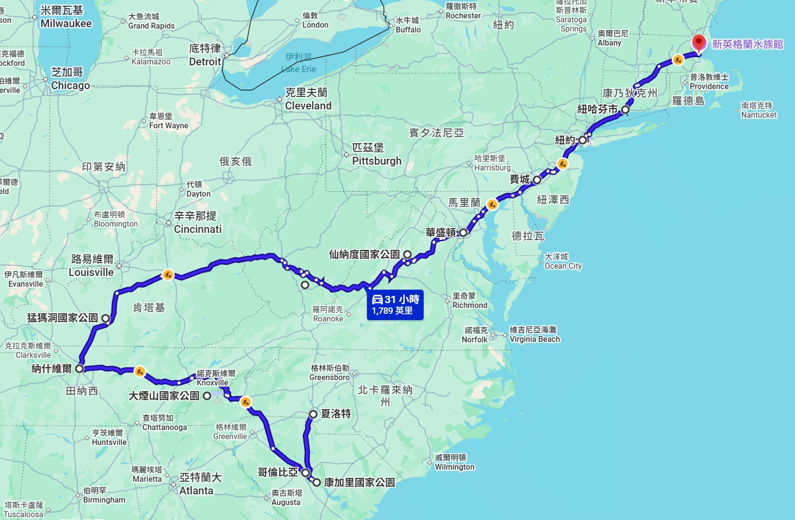

👆 點小圖進入當天行程・地圖可左右滑動
📅14 天12/22 – 1/4
🚗約 1,789 英里開車約 31 小時
🏞️5 座國家公園Congaree・Smoky・Mammoth・New River・Shenandoah
🎓7 所大學USC・Vanderbilt・VMI・West Point・Yale・MIT・Harvard
🎆時代廣場跨年12/31 → 2027
12/22 第零天
Phoenix/New York/Chicago → Charlotte
22:30
✈️機場租車公司Alamo櫃台集合
- 航班時間
- Eric、Mark：12:40 PHX 起飛 → 22:10 落地 CLT
- Cliff：19:48 EWR 起飛 → 21:59 落地 CLT
- Victor：18:47 ORD 起飛 → 21:55 落地 CLT
- Alamo櫃台在租車中心大樓的二樓大廳(跟Rental Cars指標走)
- 下飛機先到Baggage Claim領行李
- 在行李轉盤那層搭電梯上五樓走空橋過去
- 再搭電梯下到二樓，Alamo的櫃台就在大廳裡
- 取車後預約費城停車場
- 官網：https://philapark.org/autopark-at-olde-city/
- 時段：12/29 22:00 ~ 12/30 22:00
- 🎟️費用 $30/天
23:00
🍔Midnight Diner外帶晚餐/宵夜


1 / 4
- 復古美式餐館裝潢
- 🧇Chicken & Waffles是最值得優先考慮的料理：炸雞搭配鬆餅，再淋上糖漿，是美國南方非常經典的鹹甜組合
- 🍳想吃傳統美式宵夜，可以選 All-Day Breakfast
23:30 ~
Fort Mill飯店check-in休息
- avid hotel Fort Mill(154 Springhill Farm Rd, Fort Mill, SC 29715)
- 🎟️費用 $88.7/晚
12/23 第一天
Charlotte → Columbia → Pigeon Forge
08:30
吃完飯店早餐出門
10:00 - 10:30
Costco買水(*2)買提神飲料買午餐
- 507 Piney Grove Rd, Columbia, SC 29210
11:00 - 14:30
🌳Congaree National Park
- Congaree national park sign

- 🏛️Harry Hampton Visitor Center

 1 / 2
1 / 2- 確認水位與步道開放情況
- 全美唯一的「蚊子計量表」(Mosquito Meter)
- 🌲Weston Lake Loop Trail


 1 / 4
1 / 4- ⭐最大特色是深入美國東南部保存良好的原始氾濫平原森林，欣賞高聳巨木、濕地與獨特的沼澤生態
- 🥾全程約4.7miles，平坦簡單的木棧道環線
- 美國東部少見的高大原始森林：沿途可以看到Bald Cypress(落羽松)、Tupelo(水紫樹)、Sweetgum(楓香)等樹種。這裡不是山岳型國家公園，真正的魅力在於巨大樹木、濕地地形與原始森林氛圍
- 步道部分路段沿著溪流前進，有機會看到水鳥、水獺
- 🌿特殊的Cypress Knees(落羽松膝根)：濕地中會看到許多從泥土或水面冒出的木質突起，形狀像小型鐘乳石
- 冬季最需要注意的不是寒冷，而是淹水：Congaree位於河川氾濫平原，冬季降雨或上游河水上漲，都可能因有泥濘、倒木而積水甚至無法通行
15:00 - 16:00
🎓University of South Carolina


1 / 5
- 🏛️The Horseshoe：南卡大學最古老的區域，19世紀紅磚建築圍成馬蹄形草坪，大樹成蔭
- 📚South Caroliniana Library：1840年啟用，全美最早獨立建造的大學圖書館之一
- McKissick Museum：位在Horseshoe盡頭的校園博物館(目前修關閉只能拍外觀)
- Longstreet Theatre：古典建築與校園地標，建築以希臘復興式風格、巨大柱廊與對稱立面聞名
- 📖Thomas Cooper Library：現代大學圖書館，校園內重要的學習中心，建築前方有開闊的水池景觀，訪客若想入內需要依圖書館規定持有效身分證件登記
- 🐔吉祥物是Gamecock(鬥雞)，University of South Carolina Campus Store可買周邊
18:00 - 19:00
Pita House吃晚餐


1 / 3
- Greenville在地人氣中東料理餐廳，主打中東與地中海風味料理，以新鮮Pita Bread(口袋餅)、Hummus(鷹嘴豆泥)、Falafel(炸鷹嘴豆丸)及烤肉料理聞名
- 🫓Fresh Pita Bread：一定要體驗口袋餅，Pita是中東料理最經典的主食，可以撕開沾鷹嘴豆泥、搭配烤肉或包入蔬菜一起吃
- 🧆Falafel：最推薦嘗試的中東特色料理，以鷹嘴豆、香草及香料製作，再炸成外酥內軟的小丸子。通常搭配生菜、番茄、Pita 與芝麻醬，是非常經典的中東街頭美食
- Hummus：經典鷹嘴豆泥，以鷹嘴豆、芝麻醬、檸檬及橄欖油製作，口感綿密，搭配Pita Bread非常適合
- 🍗Chicken Shawarma：雞肉香料料理，以中東香料醃製雞肉，搭配蔬菜、Pita或米飯
- 🍢 Chicken Shish Kabab：晚餐最推薦的烤雞肉串，雞胸肉以香料醃製後炭烤，搭配中東米飯、沙拉及新鮮Pita
- 🥗Middle East Plate with Chicken：第一次來最推薦，一盤可以同時吃到Hummus、Falafel 與 Chicken Shawarma
- 🍆Baba Ghannouge：煙燻風味茄子泥，以烤茄子、芝麻醬、檸檬汁及香料製作，和 Hummus不同，具有特殊的烤茄子香氣
- 🍯Baklava：飯後別錯過中東甜點，由層層酥皮、堅果及糖漿製作，口感酥脆且偏甜。Pita House附設中東食品雜貨與甜點區，可以吃完晚餐再挑選特色甜食
- ⚠️注意：餐廳以現金付款為主，記得先領現金
21:00 ~
Cherokee飯店check-in休息
- Microtel Inn & Suites by Wyndham Cherokee(674 Casino Trail, Cherokee, NC 28719)
- 🎟️費用 $90.91/晚
12/24 第二天
Cherokee → Great Smoky Mountains → Nashville
08:30
吃完飯店早餐出門
08:30 - 09:00
Food Lion買午餐
09:00 - 17:30
🏔️Great Smoky Mountains National Park(看當天狀況四選一)
👆 點選切換・四選一
- 09:00 - 09:30🏛️Oconaluftee Visitor Center


 1 / 4
1 / 4- 🎟️使用停車場的自動售票機購買 $5 Daily Parking Tag
- 🦌野生Elk觀賞：附近的Oconaluftee草地是大煙山國家公園著名的賞鹿地點，清晨與傍晚較有機會看到成群麋鹿
- 🏡Mountain Farm Museum：展示 19 世紀傳統阿帕拉契農村建築，包括木屋、穀倉與農舍，免費參觀
- 10:00 - 10:30Newfound Gap


 1 / 4
1 / 4- 🏔️海拔5046英尺：位於大煙山國家公園高海拔山口，可欣賞層層山巒與著名的藍色煙霧景觀
- 📍田納西州與北卡羅來納州交界：著名的Tennessee–North Carolina州界標誌
- 📜羅斯福總統紀念地：1940年美國羅斯福總統在此主持大煙山國家公園啟用典禮，現場設有紀念碑
- 10:30 - 13:30⑧Chimney Tops Trail


 1 / 5
1 / 5- 🏔️Chimney Tops雙峰奇岩：以兩座突出山脊的煙囪狀岩峰聞名，是大煙山最具辨識度的山岳地標之一，沿途欣賞壯麗山巒與陡峭岩壁
- 🥾全程往返約4.2miles，爬升約1473ft，屬中等偏難步道，路程雖短，但有大量陡坡及石階
- 溪流木橋與森林步道：前段穿越茂密森林，跨越溪流木橋，接著沿著石階逐漸爬升至高處山脊
- 📸Chimney Tops Overlook山岳觀景台：終點欣賞煙囪峰尖銳岩壁、Mount LeConte及周圍連綿山巒，是整條路線最值得拍照的地方
- 🔥2016年森林野火遺跡：沿途能觀察野火後逐漸恢復的山林生態，由於岩峰周圍地質受損，最後約一段通往真正峰頂的步道永久禁止進入，目前只能走到觀景台
- 13:30 - 14:00🏛️Sugarlands Visitor Center

- 14:30 - 17:30③Rainbow Falls Trail(四點前沒到就得回頭)


 1 / 3
1 / 3- 💦Rainbow Falls 彩虹瀑布：高約24 公尺，是大煙山著名的單段瀑布，陽光照射水霧時，有機會在瀑布底部看見彩虹
- 🥾全程往返約5.4miles，爬升約1597ft，屬中等偏難的折返步道，沿著山坡逐漸攀升至瀑布
- 🌲原始森林與溪流景觀：沿途可欣賞古老樹木、岩石溪流、杜鵑花林，以及2016年森林火災留下的生態痕跡。
- 09:00 - 09:30🏛️Oconaluftee Visitor Center1 / 4
- 🎟️使用停車場的自動售票機購買 $5 Daily Parking Tag
- 🦌野生Elk觀賞：附近的Oconaluftee草地是大煙山國家公園著名的賞鹿地點，清晨與傍晚較有機會看到成群麋鹿
- 🏡Mountain Farm Museum：展示 19 世紀傳統阿帕拉契農村建築，包括木屋、穀倉與農舍，免費參觀
- 10:00 - 10:30Newfound Gap1 / 4
- 🏔️海拔5046英尺：位於大煙山國家公園高海拔山口，可欣賞層層山巒與著名的藍色煙霧景觀
- 📍田納西州與北卡羅來納州交界：著名的Tennessee–North Carolina州界標誌
- 📜羅斯福總統紀念地：1940年美國羅斯福總統在此主持大煙山國家公園啟用典禮，現場設有紀念碑
- 10:30 - 15:30④Charlies Bunion via Appalachian Trail


 1 / 5
1 / 5- 🏔️Charlies Bunion壯麗懸崖觀景點：終點是突出山脊的巨大岩石，欣賞大煙山層層山巒、深谷與遼闊視野，是園區著名的高山觀景步道
- 🥾Appalachian Trail經典山脊健行：全程往返約8miles，爬升約1837ft，屬中等偏難的折返步道，沿途有多段上下坡
- 🌲高海拔雲杉冷杉森林：從Newfound Gap出發，穿越高山森林、岩石路段及狹窄山脊，體驗與低海拔森林不同的景觀
- 📸360°山岳景觀：Charlies Bunion岩石突出於山谷上方，欣賞開闊的高山景色
- ❄️冬季雪景與雲海：12月底可能出現積雪森林、結霜樹木及雲霧山谷，但高海拔強風、低溫及結冰會增加健行難度
- 16:00 - 16:30🏛️Sugarlands Visitor Center
- 09:00 - 09:30🏛️Oconaluftee Visitor Center1 / 4
- 🎟️使用停車場的自動售票機購買 $5 Daily Parking Tag
- 🦌野生Elk觀賞：附近的Oconaluftee草地是大煙山國家公園著名的賞鹿地點，清晨與傍晚較有機會看到成群麋鹿
- 🏡Mountain Farm Museum：展示 19 世紀傳統阿帕拉契農村建築，包括木屋、穀倉與農舍，免費參觀
- 10:00 - 10:30Newfound Gap1 / 4
- 🏔️海拔5046英尺：位於大煙山國家公園高海拔山口，可欣賞層層山巒與著名的藍色煙霧景觀
- 📍田納西州與北卡羅來納州交界：著名的Tennessee–North Carolina州界標誌
- 📜羅斯福總統紀念地：1940年美國羅斯福總統在此主持大煙山國家公園啟用典禮，現場設有紀念碑
- 10:30 - 13:30②Peregrine Peak via Alum Cave Bluff Trail


 1 / 5
1 / 5- 🥾全程往返約4.7miles，爬升約1184ft，屬中等偏難的折返步道，沿途有森林、溪流與高山瞭望
- Arch Rock天然岩石隧道：穿過巨大天然岩石拱門，沿著石階向上，是步道最具特色的景點之一
- 🏔️Inspiration Point山谷觀景點：位於 Peregrine Peak 附近，可欣賞大煙山層層山巒、深谷及遠方的Little Duck Hawk Ridge
- Alum Cave Bluffs巨型岩壁：約 23 公尺高的巨大岩壁懸崖與特殊地質景觀，也是最推薦的折返點
- ❄️冬季限定景觀：12月底有機會欣賞覆雪森林、結霜岩壁與冰柱，但石階及懸崖路段容易結冰，需特別注意安全
- 13:30 - 14:00🏛️Sugarlands Visitor Center
- 14:30 - 17:30⑧Chimney Tops Trail1 / 5
- 🏔️Chimney Tops雙峰奇岩：以兩座突出山脊的煙囪狀岩峰聞名，是大煙山最具辨識度的山岳地標之一，沿途欣賞壯麗山巒與陡峭岩壁
- 🥾全程往返約4.2miles，爬升約1473ft，屬中等偏難步道，路程雖短，但有大量陡坡及石階
- 溪流木橋與森林步道：前段穿越茂密森林，跨越溪流木橋，接著沿著石階逐漸爬升至高處山脊
- 📸Chimney Tops Overlook山岳觀景台：終點欣賞煙囪峰尖銳岩壁、Mount LeConte及周圍連綿山巒，是整條路線最值得拍照的地方
- 🔥2016年森林野火遺跡：沿途能觀察野火後逐漸恢復的山林生態，由於岩峰周圍地質受損，最後約一段通往真正峰頂的步道永久禁止進入，目前只能走到觀景台
- 09:00 - 09:30🏛️Oconaluftee Visitor Center1 / 4
- 🎟️使用停車場的自動售票機購買 $5 Daily Parking Tag
- 🦌野生Elk觀賞：附近的Oconaluftee草地是大煙山國家公園著名的賞鹿地點，清晨與傍晚較有機會看到成群麋鹿
- 🏡Mountain Farm Museum：展示 19 世紀傳統阿帕拉契農村建築，包括木屋、穀倉與農舍，免費參觀
- 12:00 - 12:30🏛️Sugarlands Visitor Center
- 13:00 - 17:00③Rainbow Falls Trail1 / 3
- 💦Rainbow Falls 彩虹瀑布：高約24公尺，是大煙山著名的單段瀑布，陽光照射水霧時，有機會在瀑布底部看見彩虹
- 🥾全程往返約5.4miles，爬升約1597ft，屬中等偏難的折返步道，沿著山坡逐漸攀升至瀑布
- 🌲原始森林與溪流景觀：沿途可欣賞古老樹木、岩石溪流、杜鵑花林，以及2016年森林火災留下的生態痕跡。
18:30 - 20:00
🎄平安夜晚餐(三選一)
👆 點選切換・三選一


1 / 5
- 💰US$20-30
- 🍗Honey Dusted Fried Chicken：餐廳招牌料理，外皮酥脆、肉質鮮嫩，撒上特製蜂蜜調味粉，是最推薦的必點主菜
- 🧇Chicken & Waffles：南方經典甜鹹組合，酥脆炸雞搭配鬆軟鬆餅
- 🍤Shrimp & Grits：南方傳統代表料理，鮮蝦搭配濃郁的山羊乳酪玉米粥，口感香濃
- 🍅Fried Green Tomatoes：經典南方開胃菜，外層香酥、內部微酸，搭配醬汁與乳酪玉米粥
- 🍯Buttermilk Biscuits：南方特色餐前麵包，口感鬆軟，適合搭配蜂蜜或果醬享用


1 / 5
- 💰US$20-30
- Hickory Smoked BBQ Ribs：餐廳最具代表性的招牌料理，使用山核桃木慢燻豬肋排，再刷上BBQ醬汁燒烤
- 🐷Hickory Smoked BBQ Pork：傳統田納西州BBQ料理，帶有濃郁煙燻香氣，搭配烤肉醬與配菜
- 🍗Calhoun's Trio：經典燒烤拼盤，一次品嚐豬肋排、雞柳條與煙燻豬肉，適合想吃多種招牌料理的人
- 🐟Southern-Fried Catfish：美國南方傳統炸鯰魚料理，外皮酥脆、魚肉鮮嫩，可搭配薯條或馬鈴薯泥
- 🧀Mac 'n Cheese & Smoky Mountain Baked Beans：推薦搭配的美式南方配菜，濃郁起司通心粉與煙燻風味焗豆
- 🌉Tennessee River河畔景觀：餐廳緊鄰田納西河，設有河景室內座位及戶外露台，可欣賞河岸與Knoxville市區景色


1 / 3
- 💰US$15-25
- 🍔Knoxville人氣手工漢堡店
- The Mother Clucker炸雞漢堡：酪乳炸雞搭配Havarti起司、波本洋蔥、番茄及蒜香美乃滋
- The Free Bird火雞漢堡：以火雞肉排搭配酪梨、蜂蜜芥末醬、蔬菜及波本洋蔥，口味較清爽
- 🍟Duck Fat Fries鴨油薯條：使用鴨油製作，搭配帕瑪森起司、青蔥及蒜味美乃滋，是值得的特色開胃菜
- 🍅Fried Green Tomatoes：經典南方炸青番茄料理，搭配山羊乳酪與巴薩米克醋醬，外酥內酸，具有地方特色
- S'mores Shake：棉花糖奶昔，香草冰淇淋搭配全麥餅乾、烤棉花糖及巧克力醬，適合飯後甜點
22:00 ~
Nashville飯店check-in休息
- 🕘有時差，要減一小時
- Tru By Hilton Nashville Downtown Convention Center(500 Rep. John Lewis Way S, Nashville, TN 37203)
- 🎟️費用 $346.38/兩晚
12/25 第三天
Nashville
08:30
吃完飯店早餐出門
08:30 - 09:00
🎨The Gulch 牆繪


1 / 4
- What Lifts You天使翅膀牆繪：Nashville最具代表性的打卡景點之一，由藝術家 Kelsey Montague 創作，黑色牆面搭配精緻白色翅膀
- 🌈Jason Woodside彩色幾何牆繪：位於299 11th Ave S，以鮮豔色塊、幾何圖形與線條構成
- 🎨Ian Ross抽象藝術牆繪：位於251 11th Ave S附近，以自由流動的線條及抽象圖案呈現
09:30 - 10:30
🏛️Centennial Park


1 / 5
- Parthenon神殿：公園最具代表性的地標，按照希臘雅典帕德嫩神殿原始尺寸建造，是全球著名的等比例複製神殿，外觀壯觀
- 1897年田納西州百年博覽會遺跡：公園原為紀念田納西州建州百年而舉辦博覽會的場地，神殿最初也是為博覽會興建
- 🌊Lake Watauga 瓦陶加湖：位於神殿旁的人工湖，可欣賞湖面倒映神殿的景色，沿岸有步道、野鴨與綠地
- 🌳Centennial Park公園散步
10:30 - 11:30
🎓Vanderbilt University


1 / 4
- 美國頂尖私立研究型大學：創立於1873年，為美國知名的研究型大學，以教育、醫學、工程與商學等領域聞名，校園融合歷史建築與現代學術設施
- Kirkland Hall標誌性鐘樓：建於1875 年，為校園最古老的建築，以紅磚外牆、哥德式拱門及高聳鐘樓聞名
- Peabody College歷史建築群：以Wyatt Center、古典柱廊與對稱草坪為特色，呈現典雅的美國大學校園氛圍
- 校園植物園 Arboretum：校園擁有超過 6,000 棵樹木與灌木、190 多種植物，步道穿梭在百年老樹與歷史建築之間，環境優美
12:00 - 13:00
Monell’s吃午餐


1 / 4
- 🏡Nashville經典南方家庭餐廳：1995年開業，位於歷史悠久的Germantown維多利亞式老宅，以傳統美國南方家常料理與溫馨用餐氛圍聞名
- 🍗Skillet Fried Chicken經典南方炸雞：餐廳最具代表性的招牌料理，外皮金黃酥脆、雞肉鮮嫩多汁，每餐皆供應，是必吃的招牌菜
- 🍽️Family-Style Dining家庭共享式料理：不是單點制，而是與其他客人圍坐大桌，共享炸雞、肉類、蔬菜、麵包與甜點；固定價格可享用多種南方料理，餐點可續添
- 🥘Southern Comfort Food南方傳統配菜：推薦Corn Pudding、Biscuits、Green Beans與 Cheese Grits
- 🎄Christmas Day Meal聖誕節特色午餐：12/25提供特別的聖誕節家庭共享餐，適合體驗美國傳統節日料理與當地聚餐文化，實際菜色依當日節慶菜單為準
13:00 - 14:00
🏛️Bicentennial Capitol Mall State Park


1 / 4
- Tennessee State Capitol州議會大廈景觀：公園位於田納西州議會大廈北側，擁有寬闊草坪與對稱步道，可從公園欣賞議會大廈與Nashville市區天際線
- 🔔95-Bell Carillon 鐘琴廣場：95座鐘代表田納西州的95個郡，設置於50根高聳石柱內，每小時演奏音樂，是公園最具特色的地標之一
- ⭐Court of Three Stars三星廣場：地面以紅、白、藍色花崗岩組成三顆星，象徵田納西州東部、中部與西部三大區域
- 🗺️200-Foot Granite Map巨型田納西州地圖：長約61公尺的花崗岩地圖，刻有州內城市、河流、道路與地形，可直接走在大型地圖上探索田納西州
- 🌍World War II Memorial二戰紀念碑：設有大型黑色花崗岩地球儀及歷史紀念石柱，紀念田納西州在第二次世界大戰期間的貢獻
14:30 - 18:30
🎄Gaylord Opryland


1 / 8
- ⚠️一定要在15:00前入園(12/18–12/31非房客的規定) ，車停在Opry Mills再走過來
- 🎪15:30 - 16:35 POMP, SNOW & CIRQUEumstance聖誕馬戲團：2026 年聖誕節限定演出，結合高空特技、雜耍、魔術、音樂與華麗服裝，由國際表演團隊呈現百老匯風格的節慶馬戲表演
- 🎄A Country Christmas聖誕燈飾：飯店每年聖誕季布置超過500萬盞燈光，搭配巨型聖誕樹、胡桃鉗與節慶裝置，是Nashville著名的聖誕打卡景點
- 🌴Garden Conservatory室內熱帶花園：飯店擁有約9英畝的室內花園，包含瀑布、小橋、熱帶植物與玻璃穹頂，充滿特色
- 🚤Delta Atrium室內河道：巨型玻璃中庭內有蜿蜒河道、瀑布與商店可欣賞熱帶庭園景觀
- ✨Christmas Light & Fountain Show聖誕燈光水舞秀：Delta Atrium的免費燈光噴泉秀結合音樂、燈光與水舞，12/25 預定18:00、19:00、20:00、21:00有不同場次
19:00 - 19:30
🎸Grand Ole Opry House


1 / 4
- 美國鄉村音樂聖地：Grand Ole Opry創立於1925 年，是美國最具代表性的鄉村音樂節目之一，曾登台的巨星包括Dolly Parton、Johnny Cash與Carrie Underwood
- Grand Ole Opry House經典建築：1974年啟用的表演場館，可在外部欣賞建築及Grand Ole Opry招牌，是Nashville著名的音樂文化地標
- 📸Opry Plaza戶外拍照：入口廣場設有鄉村音樂主題裝飾及藝人海報，適合拍攝建築外觀與紀念照片，無須購買演出票
- 🛍️The Opry Shop紀念品商店：販售鄉村音樂T-shirt、唱片、帽子及特色紀念品，平常無須演出票即可進入
- 🎶音樂歷史體驗：雖然不看演出仍能感受這座經典音樂殿堂的氛圍，但內部觀眾席、舞台與後台需要購買演出或導覽門票，不能免費參觀
20:00 - 23:00
🍺Broadway晚餐＋酒吧 → Printer’s Alley → Pedestrian Bridge 夜景


1 / 6
- 🎸20:30–21:45｜Broadway鄉村音樂酒吧街：Nashville最著名的Honky Tonk Highway，兩側聚集霓虹燈酒吧、現場鄉村音樂與頂樓酒吧，是體驗Music City夜生活的必訪地點
- Broadway晚餐＋現場音樂：推薦Robert's Western World(傳統鄉村音樂、平價餐點)、Tootsie's Orchid Lounge(三層樓現場演奏)或The Stage on Broadway(大型舞台)，部分酒吧平時免費入場，主要花費為餐飲與樂團小費
- 🎷21:45–22:15｜Printer's Alley歷史酒吧巷：昔日印刷與報業中心，現為充滿霓虹燈的復古夜生活街區。推薦欣賞Bourbon Street Blues and Boogie Bar或Skull's Rainbow Room的外觀與氣氛，感受與Broadway不同的藍調、爵士文化
- 🌉22:30–23:00｜John Seigenthaler Pedestrian Bridge夜景：跨越Cumberland River的歷史行人橋，免費欣賞Nashville市區高樓燈光、河岸倒影與Nissan Stadium，是拍攝 Downtown Skyline的經典地點
23:00 ~
回飯店休息
12/26 第四天
Nashville → Mammoth Cave → Lexington KY → Charleston
07:30
吃完飯店早餐出門
08:00 - 08:30
Walmart買午餐
- 3458 Dickerson Pike, Nashville, TN 37207
10:00 - 10:30
🏛️Mammoth Cave Visitor Center
- 到達時先報到導覽後再逛
- ⚠️導覽途中沒有廁所，報到前先去
10:30 - 12:30
🦇Domes and Dripstones Tour


1 / 6
- 🎟️費用 $30/人
- 在遊客中心集合再搭短程接駁車到洞口
- 🌡️洞內全年恆溫12°C，穿外套、好走的鞋
- 世界最長洞穴系統Mammoth Cave，洞穴通道超過400英里，是聯合國教科文組織歷經數百萬年形成的地下石灰岩世界世界自然遺產
- 🕳️巨大垂直洞穴Domes：從天然陷穴進入，沿著陡峭金屬階梯下降約280階，穿越高聳狹窄的地下洞穴
- Frozen Niagara冰凍尼加拉瀑布：導覽最精彩的景點之一，巨大流石如同凝固的瀑布，搭配鐘乳石、石筍與石柱，是猛獁洞最具代表性的地質奇觀
- 🥾洞穴探險與特殊地形：全程約0.75mile，包含約640階階梯、陡坡及狹窄通道，雖然距離短，但屬高強度洞穴健行
- 地質與洞穴形成解說：由國家公園Ranger帶領，介紹地下水侵蝕、石灰岩溶解與鐘乳石形成過程
12:30 - 13:30
車上休息吃午餐
13:30 - 15:00
🌲Dixon Cave, Green River Bluffs, and River Styx Spring Loop


1 / 4
- 🥾全程約1.7miles，爬升約300ft，屬中等難度，結合森林、洞穴入口與河谷景觀
- 🕳️Dixon Cave天然洞穴入口：沿途從觀景區欣賞石灰岩洞穴入口與地質景觀，洞穴因保護蝙蝠及自然生態不開放遊客自行進入
- 🌄Green River Bluffs河谷觀景點：從森林高處俯瞰Green River蜿蜒河道與周圍山谷，冬季樹葉掉落後，部分河谷視野更加開闊
- 💧River Styx Spring 地下河湧泉：洞穴地下河水從石灰岩地層流出，最終匯入Green River
- 🏞️Historic Entrance歷史洞穴入口：路線鄰近猛獁洞著名的天然歷史入口，欣賞巨大岩壁與洞口地形
18:00 - 18:30
Costco加油買水買隔天早餐午餐
- 1500 Fitzgerald Ct, Lexington, KY 40509
- 🕘有時差，要加一小時
18:30 - 20:00
晚餐(三選一)
👆 點選切換・三選一


1 / 3
- Lexington在地經典美式餐廳，以肯塔基州傳統家常料理、復古美式 Diner 氛圍與大份量餐點聞名，適合體驗道地南方飲食文化
- 🦃Kentucky Hot Brown肯塔基經典熱三明治：當地代表性料理，以吐司搭配火雞肉、火腿及濃郁焗烤起司製作，口感香濃
- 🍗Meat & Three南方經典套餐：選擇一份主肉搭配三種配菜，推薦 Fried Chicken Breast、BBQ Chicken或 Pork Chops
- 🐟Southern Style Catfish南方炸鯰魚：外皮金黃酥脆、魚肉鮮嫩，可選擇傳統炸魚、Cajun香料炸魚或黑胡椒煎魚，搭配三種配菜享用
- 🧀經典南方配菜：推薦Mac & Cheese、Fried Green Tomatoes、Mashed Potatoes及 Fried Okra
- 🥧Mayday Pie肯塔基特色甜點：Ramsey's具代表性的巧克力堅果派，風格類似肯塔基州著名的Derby Pie，適合飯後多人分享


1 / 3
- 道地美國南方靈魂料理，主打Grandma's Home Cooked Meal，以傳統南方家庭料理、大份量與親民價格聞名，餐廳風格樸實
- 🐷Pork Chop Dinner南方豬排套餐：餐廳人氣招牌，可選炸豬排或濃郁肉汁燉豬排，搭配兩種配菜
- 🍗Fried Chicken Dinner南方炸雞套餐：外皮香酥、雞肉鮮嫩，搭配經典南方配菜，是高 CP 值的選擇
- 🥘Southern Hot Bar南方家常熱食吧：每日提供不同主菜與配菜，可依當天供應選擇，適合想一次品嚐多種南方料理的人，並非吃到飽形式


1 / 4
- 🌶️Lexington人氣Cajun&Creole餐廳，主打路易斯安那州傳統卡津與克里奧爾料理，特色為香料濃郁、份量實在且價格親民
- 🍗Chicken Étouffée雞肉濃燴飯：餐廳最熱銷的招牌料理，以雞肉、甜椒、洋蔥與濃郁香料肉汁慢燉，淋在白飯上，風味香濃
- 🍤Gumbo紐奧良秋葵濃湯飯：以雞肉、香腸、鮮蝦及秋葵燉煮，帶有濃郁香料與煙燻風味，是經典的路易斯安那料理
- 🍚Jambalaya紐奧良什錦燴飯：雞肉搭配煙燻香腸、甜椒、洋蔥與芹菜烹製，帶有微辣的Cajun香氣，適合喜歡重口味的人
- 🦞Southwest Crawfish Étouffée小龍蝦濃燴飯：以小龍蝦尾肉、起司與香料調製，融合傳統南方風味與西南美式料理特色
- Half&Half雙拼套餐：可任選兩種不同料理搭配，並附香料蒜香麵包，是最推薦的高CP值點餐方式
22:30 ~
Charleston Airbnb check-in休息
- 617 Grant St, Charleston, WV 25302
- 🎟️費用 $128.41/晚
- 有免費洗衣機、烘衣機
12/27 第五天
Charleston → New River Gorge → Lexington VA
08:30
帶著或吃完早餐出發
11:00 - 13:00
🥾Long Point Trail


1 / 3
- 🌉New River Gorge Bridge經典全景：終點Long Point Overlook可正面欣賞橫跨峽谷的巨大鋼拱橋，將橋梁、深邃峽谷與New River一同收入畫面，是國家公園最具代表性的攝影位置之一
- 🥾全程往返約3.2miles，前段較平緩，接近終點時有一段較陡峭的岩石坡道
- 🌲森林與杜鵑花步道：沿途穿越開闊草地、闊葉林與杜鵑花林，部分路段形成天然綠色隧道，冬季落葉後視野更加通透
- Long Point岩石觀景平台：終點是一塊向峽谷突出的天然岩石平台欣賞約267公尺高的 New River Gorge Bridge
- 📸冬季特殊景觀：12 月底樹葉大多掉落，有利於欣賞完整的鋼拱橋結構與岩壁，若遇降雪，還有機會拍攝白雪覆蓋峽谷的獨特景色
13:00 - 14:00
🏛️Canyon Rim Visitor Center


1 / 3
- 車上吃午餐
- 🌉New River Gorge Bridge 新河峽谷大橋：建於 1977 年，橫跨深邃的新河峽谷，是美國最具代表性的鋼拱橋之一，也是國家公園最著名的地標
- 📸Canyon Rim Boardwalk 峽谷觀景步道：沿著木棧道欣賞峽谷與大橋，設有上、下兩座觀景平台，是遊客中心最值得參觀的景點
- 🏔️Lower Overlook 下層觀景台：需走下 178 階階梯，可從更低的角度近距離欣賞巨大鋼拱橋與峽谷，是推薦的拍照位置，回程需爬階梯。
- 🌊New River Gorge 峽谷全景：從高處俯瞰 New River 蜿蜒穿越森林山谷，冬季樹葉掉落後，能欣賞更加清晰的橋梁結構與峽谷地形
14:00 - 15:30
🥾Endless Wall Trail


1 / 5
- 🥾全程往返約3.2miles，爬升約500ft
- 🏞️Diamond Point峽谷全景觀景點：步道最精彩的終點之一，可從高聳砂岩懸崖俯瞰將近 1000ft深的 New River Gorge，欣賞蜿蜒河流與連綿山谷
- Endless Wall無盡岩壁：沿途經過綿延的巨大砂岩峭壁，是美國東部知名的攀岩區，擁有壯觀的垂直岩壁與多處天然觀景平台
- 🌲Fern Creek森林溪流：步道前段穿越鐵杉林、杜鵑花叢與小溪，沿途可欣賞木橋、岩石地形及原始森林景觀
- 📸多處懸崖觀景平台：沿著峽谷邊緣行走，可以從不同角度拍攝New River河谷，冬季落葉後視野更開闊，是園區最值得安排的攝影步道之一
15:30 - 16:30
🚗Fayette Station Road


1 / 6
- 🌉New River Gorge Bridge橋底壯觀視角：沿著峽谷公路一路下降至河谷底部，從下方仰望高達876英尺的巨大鋼拱橋，是欣賞橋梁結構最震撼的角度之一
- 8英里經典景觀公路：全長約13公里單向行駛，沿途有連續髮夾彎、森林道路與峽谷景觀，體驗從峽谷頂端一路開到河谷底部的特殊路線
- Fayette Station River Access河畔觀景點：可停車走到New River河岸，近距離欣賞湍急河水、巨大岩壁與高聳大橋，非常適合拍攝橋梁與河流合照
- 🌉Tunney Hunsaker Bridge歷史鐵橋：跨越New River的小型鋼橋，重建於1998年，可欣賞現代大橋與舊式河谷橋梁之間的高度及工程差異
- 歷史煤礦與鐵路遺跡：這條道路曾是1977年新大橋完工前的重要通道，沿途可見昔日Fayette與South Fayette聚落的歷史解說，認識當地煤礦與鐵路發展
19:00 - 20:00
Chick-fil-A吃晚餐
20:00 ~
Lexington VA飯店check-in休息
- Tru By Hilton Lexington(22 Hotel Dr, Lexington, VA 24450)
- 🎟️費用 $131.42/晚
12/28 第六天
Lexington VA → Shenandoah → Washington DC
🗺️ 本日地圖(視Skyline Drive封路情況二選一)
⚠️出發前查Skyline Drive封路狀況：確認官網、看888777的簡訊通知
ATru by Hilton LexingtonBWalmart SupercenterC維吉尼亞軍校DThe Point OverlookEDark Hollow Falls TrailFSpitler Knoll OverlookGStony Man TrlHThorofare Mountain OverlookIHazel Mountain OverlookJTunnel Parking OverlookKHogback OverlookLDickey Ridge Visitor CenterMHampton Inn Washington DC NoMa Union StationNBen's Chili BowlO座標點PHampton Inn Washington DC NoMa Union Station
08:00
吃完飯店早餐出發
08:30 - 09:00
Walmart買午餐
- 1233 N Lee Hwy, Lexington, VA 24450
09:00 - 10:00
🎖️Virginia Military Institute


1 / 6
- 🎖️美國歷史悠久的軍事學院：創立於1839年，是美國最古老的州立軍事學院，以嚴格的軍事訓練、領導教育及軍校傳統聞名
- 🏰Old Barracks城堡式軍校建築：校園最具代表性的地標，採哥德復興式建築風格，擁有城堡般的塔樓、拱門與城牆外觀
- 🏟️Parade Ground軍事閱兵廣場：面積約12英畝，位於軍校營舍前方，能欣賞整排壯觀的軍校建築
- Memorial Hall紀念禮堂：具有歷史意義的校園建築，內部設有大型歷史壁畫與紀念空間，展示軍校傳統及美國軍事歷史，開放情況依校方規定
- 🌳Memorial Garden 紀念花園：設有雕像、紀念碑及階梯式花園
12:00 - 16:30
🏔️Shenandoah National Park(視Skyline Drive封路情況二選一)
👆 點選切換・二選一
- The Point Overlook（55.5）


 1 / 6
1 / 6- Blue Ridge Mountains藍嶺山脈全景：位於海拔3235ft的高處，向西北方眺望層層山巒與深邃山谷，是Skyline Drive著名的山岳觀景點
- 🌄Shenandoah Valley仙納度山谷：天氣晴朗時可遠眺廣闊的山谷，包括Powell Mountain、Grindstone Mountain與Green Mountain，欣賞山脈綿延的壯觀景色
- 🪨隱藏版岩石觀景點：停車場石牆缺口旁有一條約0.1mile的短步道，可通往突出的天然岩石觀景區，視野比停車場更加開闊。
- 📸夕陽與山巒攝影勝地：觀景方向朝西北偏西，傍晚可欣賞夕陽餘暉照亮層層山脊，尤其適合拍攝山岳剪影與遠方的藍色山巒
- ❄️冬季開闊景觀：12月底山區樹木落葉後，山谷視野通常更加清楚；若遇降雪，還可能欣賞白雪覆蓋的藍嶺山脈
- Spitler Knoll Overlook（48.0）


 1 / 4
1 / 4- 🌾 Spitler Ranch歷史牧場遺跡：過去曾是Spitler Ranch放牧牛群的所在地，如今保留開闊草地景觀，與一般森林包圍的觀景台不同，具有獨特的田園氛圍
- Stony Man Trail（41.7）


 1 / 5
1 / 5- 🏔️Stony Man Summit石人山頂：海拔約4011ft，為仙納度國家公園第二高峰，山頂有開闊的天然岩石觀景平台，可欣賞壯麗山谷與層層山脈
- 🌄Shenandoah Valley山谷全景：從山頂向西俯瞰仙納度山谷，遠眺Massanutten Mountain與Allegheny Mountains，是園區最具代表性的高山觀景點之一
- 🥾輕鬆短程環狀健行：全程約1.6miles，爬升約104公尺，屬簡單難度，沿途主要為森林步道，最後通往岩石觀景平台
- 🌲Appalachian Trail阿帕拉契步道體驗：從登山口沿著著名的Appalachian Trail前進，再轉入Stony Man Trail，穿越高海拔森林抵達山頂
- 📸天然岩石平台與冬季山景：山頂岩石提供良好的拍照位置，12月底落葉後視野更通透，晴朗時可拍攝藍嶺山脈與廣闊山谷
- Thorofare Mountain Overlook（40.5）


 1 / 3
1 / 3- Skyline Drive最高海拔觀景台：海拔3595ft，是仙納度國家公園Skyline Drive海拔最高的路邊觀景台，可欣賞遼闊的藍嶺山脈景觀
- 🌄Blue Ridge Mountains東側山景：觀景方向主要朝東，可欣賞層層山脊與深邃山谷，遠眺Thorofare Mountain、Hazel Mountain及Pinnacle Ridge
- Old Rag Mountain遠眺：觀景台右側可看到著名的Old Rag Mountain，這座岩石山峰是 Shenandoah最具代表性的登山目的地之一
- ❄️冬季高山全景：12月底山林落葉後，山脊輪廓更加清晰，若遇降雪，可欣賞白雪覆蓋的森林與山谷，但實際景觀取決於天氣
- Hazel Mountain Overlook（33.0）


 1 / 5
1 / 5- Blue Ridge Mountains藍嶺山脈景觀：位於海拔2770ft的觀景台，向東南方欣賞層層森林山巒、遼闊山谷及遠方的Hazel Mountain
- 🪨Granodiorite花崗閃長岩地形：觀景台旁有巨大的天然岩石露頭，屬於藍嶺山脈古老的基盤岩石，是此地最具特色的地質景觀
- 🌳岩石與孤樹攝影構圖：路旁岩石上生長著一棵醒目的樹木，搭配遠方山脈與天空，形成獨特的自然構圖，非常適合拍攝風景照片
- Tunnel Parking Overlook（32.5）


 1 / 4
1 / 4- Marys Rock Tunnel岩石隧道：Skyline Drive唯一的隧道，全長約204公尺，直接穿越堅硬岩層，入口保留巨大的天然岩壁外觀，是非常具有特色的拍照地標
- 🏞️Skinner Ridge與Oventop Mountain：從觀景台可欣賞右側的Skinner Ridge與左側較遠的Oventop Mountain，兩座山脈之間遠方是Sperryville小鎮
- 📜1932 年歷史工程遺跡：隧道由美國平民保育團工人開鑿，歷經約三個月爆破岩石施工，展現早期Skyline Drive的道路工程歷史
- 📸隧道入口與山谷攝影：除了山谷全景，也能拍攝公路穿越巨大岩壁的特殊畫面，與前面幾座純山景觀景台相比，景觀更有辨識度
- Hogback Overlook（20.8）

 1 / 2
1 / 2- Skyline Drive最長的觀景台：位於海拔3385ft，觀景停車區沿公路延伸約0.2mile，是仙納度國家公園最長的路邊觀景台，擁有遼闊的山谷視野
- 🌄Shenandoah Valley仙納度山谷全景：主要朝北方及西北方眺望，可欣賞層層山脊、廣闊山谷及連綿的藍嶺山脈，晴朗時還能遠眺Allegheny Mountains
- Gimlet Ridge與Mathews Arm山稜：正前方可欣賞Gimlet Ridge向山谷延伸的壯觀地形，右側則是Mathews Arm，形成多層次的山岳景觀
- 📸開闊的全景攝影地點：沿著路邊石牆即可從不同角度拍攝山谷，不需要健行
- 🏛️Dickey Ridge Visitor Center
- 🏛️Dickey Ridge Visitor Center
- Compton Peak Summit via Appalachian Trail（10.4）

 1 / 2
1 / 2- 🏔️Compton Peak West山頂觀景點：從山頂西側岩石平台俯瞰Shenandoah Valley與連綿的Blue Ridge Mountains，欣賞壯麗山谷及層層山脊
- 🪨Columnar Jointing柱狀節理奇岩：步道最獨特的地質景觀，約5.7億年前的火山熔岩冷卻後形成多邊形岩柱，外觀類似巨大蜂巢，是仙納度國家公園少見的地質奇觀
- 🥾Appalachian Trail經典山脊健行：全程往返約2.8miles，屬中等難度，沿著森林山坡爬升至山頂附近
- 🌄東西雙觀景點：西側以開闊山谷及山巒全景為主，東側則可欣賞岩壁與特殊地質景觀
- 🌲冬季森林與岩石景觀：12月底森林落葉後，沿途山景視野更加通透，若有積雪，山稜與岩石可能呈現冬季雪景，但東側柱狀節理路段也會更加濕滑
- Range View Overlook（17.1）
- Blue Ridge Mountains藍嶺山脈全景：位於海拔2810ft的觀景台，向南眺望連綿山脈，是Skyline Drive北段著名的山岳觀景點
- 🌄層層山巒與壯麗山谷：從近處的Keyser Mountain一直延伸到遠方的Old Rag Mountain與Stony Man Mountain，欣賞不同距離山峰交錯形成的壯麗景色
- 📸經典山脈全景攝影：觀景台擁有寬闊視野，山脈層層延伸至遠方，晴朗時能拍攝具有深度的藍色山巒景觀
- 🌿Skyline Drive北段代表性景點：不需要健行即可欣賞仙納度國家公園中北部的山岳地形
- Hogback Overlook（20.8）1 / 2
- Skyline Drive最長的觀景台：位於海拔3385ft，觀景停車區沿公路延伸約0.2mile，是仙納度國家公園最長的路邊觀景台，擁有遼闊的山谷視野
- 🌄Shenandoah Valley仙納度山谷全景：主要朝北方及西北方眺望，可欣賞層層山脊、廣闊山谷及連綿的藍嶺山脈，晴朗時還能遠眺Allegheny Mountains
- Gimlet Ridge與Mathews Arm山稜：正前方可欣賞Gimlet Ridge向山谷延伸的壯觀地形，右側則是Mathews Arm，形成多層次的山岳景觀
- 📸開闊的全景攝影地點：沿著路邊石牆即可從不同角度拍攝山谷，不需要健行
18:30 - 19:00
Washington DC飯店check-in放行李
- Hampton Inn Washington DC NoMa Union Station(501 New York Ave NE Ste A, Washington, DC 20002)
- 🎟️費用 $132.16/晚
- 🎟️停車費 $45/晚(含自由進出)
19:30 - 20:30
晚餐(三選一)
👆 點選切換・三選一


1 / 4
- 華盛頓特區傳奇老店：創立於1958年，是D.C.最具代表性的在地餐廳之一，曾接待美國總統、名人與民權運動人士，保留濃厚的美式復古餐館氛圍
- 🌭Original Half-Smoke招牌辣肉醬香腸堡(含牛肉)：華盛頓特區經典美食，以煙燻香腸搭配芥末、洋蔥及特製辣肉醬，是餐廳最具代表性的必吃料理
- 🦃Turkey Chili火雞肉辣豆燉醬：使用火雞絞肉、番茄、洋蔥與香料燉煮，風味濃郁但相對溫和
- 🍟Turkey Chili Cheese Fries火雞辣肉醬起司薯條：金黃薯條淋上火雞肉辣醬與濃郁起司，兼具美式速食與店家特色，適合多人分享
- 📸歷史照片牆與復古裝潢：店內展示眾多名人、政治人物與歷史照片，呈現U Street的文化與民權歷史，是除了美食以外最值得體驗的特色


1 / 5
- 華盛頓人氣農場風格美式餐廳：2008年開業，位於白宮西側約三個街區，以美國家庭農場供應的食材、手工製作料理與溫馨農舍風格聞名
- 🍗Fried Chicken & Waffle炸雞鬆餅：餐廳人氣招牌，酥脆南方炸雞搭配鬆軟鬆餅、七種起司通心粉與四季豆，份量豐富，是最推薦的主餐之一
- 🥧Chicken Pot Pie雞肉派：經典美國家常料理，以酥脆派皮包覆雞肉及濃郁醬汁，口感香濃
- 🍯Hot Honey Fried Chicken蜂蜜辣炸雞：香酥炸雞搭配甜辣蜂蜜醬、起司玉米粥及四季豆，結合美式南方料理的甜鹹風味
- 🐔Honey Thyme Spatchcock Chicken蜂蜜百里香烤雞：香草蜂蜜調味烤雞搭配馬鈴薯泥與四季豆
- 🍩Uncle Buck's Beignets紐奧良炸甜麵團：餐廳人氣甜點，外層香酥、內部鬆軟，搭配巧克力、覆盆子及焦糖沾醬，適合飯後分享


1 / 4
- 🔥南非特色葡式炭烤雞餐廳：創立於1987年，源自南非，以非洲鳥眼辣椒(PERi-PERi)製作的獨特醬料聞名，雞肉醃製24小時後現點現烤
- 🍗1/2 Chicken & Chips半隻烤雞薯條：餐廳最具代表性的招牌料理，半隻火烤雞搭配香料薯條，可自行選擇辣度，肉質鮮嫩且份量充足，是最推薦的主餐
- 🍚PERi-PERi Chicken Bowl香辣烤雞飯：以葡式米飯搭配炭烤雞肉與特色醬汁
- 🌯Spicy Chicken Caesar Wrap香辣雞肉捲：雞肉搭配生菜、起司、醃洋蔥及特製凱薩醬，口味濃郁，價格相對親民
- 🍟PERi Chips & Portuguese Rice經典配菜：推薦香料薯條、葡式米飯、蒜香麵包與 PERi Mac起司通心粉，可依個人喜好搭配
- 🌶️自選PERi-PERi辣度：從Lemon & Herb(檸檬香草)、Mild(微辣)、Medium到Hot、Extra Hot，能依照喜好調整辣度
21:00 - 22:30
🌙National Mall夜景(車停在John Ericsson Memorial的Ohio Dr SW沿河路邊免費停車)
- Lincoln Memorial


 1 / 3
1 / 3- 1922年落成，紀念美國第16任總統Abraham Lincoln，建築仿照古希臘神殿，外圍設有 36根巨大多立克式石柱，夜間燈光照亮白色大理石建築，格外壯觀
- Abraham Lincoln林肯巨型坐像：紀念堂內部設有高約5.8公尺的林肯大理石坐像，兩側牆壁刻有《蓋茲堡演說》及第二次總統就職演說，是最具代表性的拍照位置
- 🌃Washington Monument華盛頓紀念碑夜景：從紀念堂正面階梯向東眺望，可欣賞華盛頓紀念碑、National Mall與城市夜景，視野開闊
- Reflecting Pool倒影池：位於林肯紀念堂與華盛頓紀念碑之間，正常開放時可欣賞燈光倒映水面的美景，是華盛頓最經典的夜間攝影地點之一
- 📜I Have a Dream歷史演說地點：1963年Martin Luther King Jr.在紀念堂階梯上發表著名的《我有一個夢》演說，階梯設有歷史紀念銘文，具有重要的美國民權歷史意義
- Korean War Veterans Memorial


 1 / 4
1 / 4- 🪖19 座士兵雕像：紀念1950~1953年韓戰中服役的美軍，19座真人大小以上的不鏽鋼雕像身穿雨衣、手持軍事裝備，呈現士兵穿越戰場巡邏的場景
- 🌙 夜間燈光與士兵剪影：夜晚地面燈光照亮士兵雕像，投射出特殊的光影，營造肅穆的戰場氛圍，是紀念碑最具特色的觀賞時間之一
- Mural Wall黑色花崗岩壁畫：長約50公尺，刻有超過2400張軍人照片組成的影像，夜間光線映照雕像與黑色石牆，呈現獨特的視覺效果
- Wall of Remembrance紀念名牆：2022年新增的弧形花崗岩紀念牆，刻有超過43000名在韓戰中犧牲的美軍及韓國增援美軍人員姓名，紀念戰爭中的犧牲者
- 📜Freedom Is Not Free自由並非沒有代價：紀念碑著名銘文，提醒遊客自由背後的歷史代價，也是整座紀念碑最重要的精神象徵
- Martin Luther King Jr. Memorial


 1 / 3
1 / 3- Stone of Hope希望之石：紀念碑最具代表性的地標，高約9.1 公尺的馬丁路德金恩雕像，從巨大花崗岩中突出，象徵從絕望之山走向希望之石
- 🌙夜間燈光與巨型雕像：夜晚暖色燈光照亮金恩博士雙手交叉的雕像，與深色天空形成鮮明對比，呈現莊嚴而震撼的視覺效果，適合夜間攝影
- Mountain of Despair絕望之山：入口兩側巨大的花崗岩象徵困境，中央的Stone of Hope 則象徵克服種族歧視、追求自由與平等的希望
- 📜Inscription Wall名言紀念牆：長約137公尺的弧形花崗岩牆，刻有金恩博士演說及著作中的14段名言，傳達和平、正義與非暴力的理念
- Tidal Basin潮汐湖夜景：紀念碑位於潮汐湖西北側，可沿著湖畔欣賞夜晚水岸風光，遠眺 Thomas Jefferson Memorial，是華盛頓著名的紀念建築景觀
- World War II Memorial


 1 / 3
1 / 3- 56 根花崗岩紀念柱：圍繞中央廣場的56根石柱，代表二戰時期美國各州、華盛頓特區及領地，象徵全國共同參與戰爭的歷史
- Atlantic & Pacific Pavilions大西洋與太平洋拱門：兩座巨大的紀念拱門象徵二戰的歐洲及太平洋戰場，夜間燈光照亮石柱與青銅老鷹雕塑，氣勢壯觀
- ⭐Freedom Wall自由之牆：牆面鑲嵌4048顆金色星星，每顆象徵約100名在二戰中犧牲的美國軍人，紀念超過40萬名陣亡者
- ⛲Rainbow Pool中央紀念水池：大型橢圓形水池位於紀念碑中央，周圍環繞石柱與拱門，是拍攝整座紀念碑的經典位置
- Washington Monument

 1 / 2
1 / 2- 美國首任總統紀念碑：為紀念美國第一任總統George Washington而建，1884年完工，高達169 公尺，是華盛頓特區最具代表性的地標之一
- 🌙巨大方尖碑夜間燈光：白色大理石方尖碑在夜間燈光照射下格外醒目，與深色天空形成強烈對比，是National Mall最值得拍攝的夜景之一
- 🇺🇸 50面美國國旗環繞：紀念碑底部由 50 面美國國旗圍繞，象徵美國50個州，適合拍攝國旗、紀念碑與夜空的經典構圖
23:00 ~
回飯店休息
12/29 第七天
Washington DC → Baltimore → Philadelphia
AHampton Inn Washington DC NoMa Union StationB美國國會大廈C國會圖書館 District of ColumbiaDThe Dubliner RestaurantEUnited States Botanic GardenF美國國家航空太空博物館G華盛頓紀念碑H國家聖誕樹 15th St NW &IHampton Inn Washington DC NoMa Union StationJCostco WholesaleKLocust Point SteamersLAutopark at Olde CityMApple Hostels of Philadelphia
08:00
吃完飯店早餐出發(行李放車上後先停飯店)
09:30 - 11:00
🏛️U.S. Capitol國會大廈


1 / 3
- 🎟️免費，已預約09:20場次
- 1793年開始興建，是美國參議院與眾議院所在地，以宏偉的新古典主義建築、白色圓頂及國會廣場聞名，是華盛頓特區最具代表性的歷史地標之一
- Rotunda 國會圓頂大廳：免費導覽最精彩的景點，欣賞高聳的圓頂、歷史壁畫與《The Apotheosis of Washington》天頂畫
- 🗿National Statuary Hall國家雕像廳：原為眾議院議事廳，現展示美國各州歷史人物雕像，擁有華麗的半圓形天花板與古典建築設計
- The Crypt地下圓形大廳：位於國會大廈圓頂正下方，由40根多立克式石柱支撐，是連接國會歷史建築的重要空間
- 🇺🇸 Capitol Visitor Center遊客中心：設有Emancipation Hall、國會歷史展覽、雕像與建築模型，可了解美國國會制度
11:00 - 12:00
📚Library of Congress國會圖書館


1 / 4
- 🎟️免費，已預約11:00場次
- 從國會大廈有地下通道直接走過去
- 世界最大圖書館之一：創立於1800年，是美國國會的研究圖書館，收藏超過1.7億件書籍、手稿、地圖、照片及歷史文獻，具有重要的文化與歷史價值
- Thomas Jefferson Building傑佛遜大樓：1897年落成，以義大利文藝復興風格建築聞名，內部有華麗大理石、雕像、彩繪天花板與金色裝飾，是華盛頓最值得欣賞的室內建築之一
- ✨Great Hall華麗中央大廳：圖書館最具代表性的拍照景點，設有巨大大理石階梯、馬賽克地板、精緻壁畫與彩繪玻璃天花板，建築細節非常壯觀
- 📖Main Reading Room主閱覽室：巨大圓頂閱覽室以環形書桌、古典雕像及金色天花板聞名，是必看的經典景點。一般遊客可從觀景區俯瞰，但10:30~11:30有限量的免費短程入內參觀名額，通常於活動開始前10分鐘在Great Hall發放，先到先得
- 歷史文獻與主題特展：展出美國重要歷史文件、珍貴藏書、地圖及文化藝術收藏
12:30 - 13:30


1 / 5
- 🍀華盛頓經典愛爾蘭酒館：創立於1974年，以傳統愛爾蘭酒館裝潢、木質吧台與道地Pub 氛圍聞名
- 🐟Fish & Chips炸魚薯條：經典英愛料理，酥炸鱈魚搭配薯條、涼拌高麗菜與塔塔醬，是最推薦的招牌餐點之一
- 🥧Chicken Pot Pie雞肉派：以雞肉、豌豆、紅蘿蔔及濃郁醬汁製成，覆蓋酥脆派皮，適合冬天享用
- 🍺傳統愛爾蘭酒吧氛圍：提供Guinness黑啤酒、愛爾蘭威士忌及多種特色飲品，晚上通常有現場愛爾蘭音樂表演，午餐時段則以用餐體驗為主
14:00 - 14:30
🌿U.S. Botanic Garden聖誕特展


1 / 9
- 🚂Season's Greenings 2026聖誕限定特展：2026年主題為「National Parks and Historic Places」，慶祝美國建國250週年，以植物材料打造美國國家公園及歷史地標
- Holiday Model Train聖誕模型火車：戶外花園設有行駛中的模型火車，穿梭於大峽谷、黃石國家公園、拱門國家公園、猛獁洞等微縮景觀之間，是今年最值得看的特色展區
- D.C. Landmarks植物微縮建築：溫室內展示超過20座美國首都地標模型，包括U.S. Capitol、Lincoln Memorial、Washington Monument等，全部使用天然植物材料製作
- 🌺Poinsettias聖誕紅花卉展示：數千株聖誕紅搭配常綠植物與節慶裝飾，形成充滿聖誕氣氛的室內花園
- 🌴Conservatory熱帶植物溫室：熱帶雨林、蘭花、仙人掌及多種珍稀植物，在寒冷冬季體驗溫暖的室內綠意空間
14:30 - 15:30
🚀National Air and Space Museum


1 / 11
- 🎟️免費，已預約14:00場次
- 世界頂尖航空與太空博物館，隸屬Smithsonian Institution，展示人類飛行、航空科技與太空探索歷史，收藏飛機、火箭、太空船及珍貴的歷史文物
- 🛩️Wright Flyer萊特兄弟第一架飛機：展示1903年完成首次成功動力飛行的原始飛機，是航空史上最重要的展品之一
- 🌕Apollo 登月計畫與太空探索：欣賞阿波羅登月任務相關展品，包括太空人Neil Armstrong曾穿著的登月太空衣
- ✈️Spirit of St. Louis聖路易精神號：Charles Lindbergh於1927年駕駛此飛機完成首次單人不間斷橫越大西洋飛行，是航空史的重要里程碑
- 🛰️Boeing Milestones of Flight Hall航空里程碑大廳：大型挑高中庭展示不同年代的飛機與太空科技展品
16:00 - 17:00
🗽Washington Monument登頂


1 / 3
- 🎟️費用 $1/人，已預約16:00場次
- 🚀高速電梯直達觀景台：搭乘電梯約70秒抵達152公尺高的觀景層，不需爬樓梯，即可從高處欣賞華盛頓城市景觀
- 🌆四面觀景窗欣賞D.C.全景：向西欣賞Lincoln Memorial與Reflecting Pool，向東俯瞰U.S. Capitol與National Mall，向北可見White House，向南則能欣賞Tidal Basin與Jefferson Memorial
- 490-Foot Museum歷史展示層：觀景結束後，可到下方490英尺的展示層，認識紀念碑的建造歷史、紀念石與建築工程
17:00 - 18:00
🎄The White House＋National Christmas Tree


1 / 4
- 白宮外觀：美國總統的官邸與辦公場所，1792 年動工、1800年首次入住，以白色新古典主義建築與巨大石柱聞名，是華盛頓最具代表性的地標之一
- South Lawn白宮南側景觀：從The Ellipse公園方向欣賞白宮南立面、Truman Balcony 與草坪，傍晚建築燈光亮起後，非常適合拍照，實際視角不確定會不會受安全管制影響
- 🎄National Christmas Tree國家聖誕樹：自1923年開始的美國總統聖誕點燈傳統，2026 年預定12/3舉行點燈典禮
- ✨Pathway of Peace聖誕樹展示：主聖誕樹周圍有代表美國各州、領地及華盛頓特區的小型聖誕樹，裝飾各具特色，夜晚亮燈後充滿節慶氣氛
- 🌟聖誕燈光與夜間攝影：官方表示聖誕樹燈光每晚接近日落時亮起，非常適合欣賞聖誕樹燈飾與白宮夜景
19:00 - 19:30
Costco加油買水(*2)買早餐
- 2441 Market St NE, Washington, DC 20018
20:30 - 21:30


1 / 4
- 🦀Maryland Steamed Blue Crabs馬里蘭蒸藍蟹：餐廳最具代表性的招牌料理，使用Old Bay風格香料蒸煮整隻藍蟹，搭配小木槌敲開蟹殼享用，是Baltimore最道地的海鮮體驗
- 🍘Maryland Crab Cakes馬里蘭蟹肉餅：以蟹肉製成的經典地方料理，外層煎炸至金黃，適合想吃螃蟹但不想花時間剝蟹殼的人
- 🍤Steamed Shrimp 香料蒸蝦：鮮蝦搭配傳統海鮮香料蒸煮，半磅份量適合分享，也是比整隻藍蟹更方便食用的選擇
- 🥣Maryland Crab Soup馬里蘭蟹肉湯：以蟹肉、蔬菜、番茄湯底與香料燉煮，另有濃郁奶油風味的Cream of Crab Soup
- 🍟Old Bay Fries & Hush Puppies經典配菜：推薦香料薯條與南方炸玉米球，適合搭配海鮮一起享用，增加飽足感
- 🌊Baltimore傳統海鮮餐廳氛圍：位於Locust Point社區，採輕鬆熱鬧的Crab House風格，三樓設有可眺望港灣的露台，體驗當地敲蟹、剝蟹的飲食文化
23:30 ~
Philadelphia青年旅館check-in休息
- 車停在Autopark at Olde City(125 S 2nd St, Philadelphia, PA 19106)
- Apple Hostels of Philadelphia(32 South Bank Street, Philadelphia, PA 19106)
- 🎟️費用 $123.2/晚
12/30 第八天
Philadelphia → New York City
08:30
出門
08:30 - 09:30
早餐(二選一)開車外帶後停回停車場
👆 點選切換・二選一


1 / 3
- 🥪Philly Cheesesteak費城經典起司牛肉三明治：餐廳創立於1930年，被視為費城起司牛肉三明治的發源地之一，以薄切牛肉、融化起司與炒洋蔥搭配長麵包聞名，是Philadelphia最具代表性的在地美食
- 🍗Chicken Cheesesteak雞肉起司三明治：以雞肉取代傳統牛肉，搭配融化起司與長麵包，保留經典Philly Cheesesteak風格
- 🧀Cheez Whiz經典起司醬：費城起司三明治的代表性搭配，可選Cheez Whiz、Provolone、American或Cooper Sharp起司，體驗不同風味
- 🍟Cheese Fries起司薯條：金黃薯條淋上濃郁起司醬，是經典美式配菜


1 / 2
- 🥪Philly Cheesesteak費城經典起司牛肉三明治：餐廳創立於1966年，以薄切肋眼牛肉、融化起司與長麵包聞名，是費城最具代表性的美食之一
- 🐷Roast Pork Sandwich烤豬肉三明治：官方菜單提供的非牛肉主餐，以烤豬肉搭配長麵包
- 🥬Veggie / Cheese Hoagie蔬菜起司三明治
10:00 - 11:00
🎨Philadelphia Museum of Art Steps


1 / 4
- 1928 年落成的宏偉新古典主義建築，以巨大石柱、三角形山牆與希臘神殿風格聞名，是費城最具代表性的建築地標之一
- 🥊Rocky Steps 洛基階梯：電影《Rocky》(1976)經典拍攝場景，主角Rocky Balboa沿著博物館前方72階樓梯奔跑，最後高舉雙手慶祝，是費城最著名的電影打卡地點
- Rocky Statue洛基雕像：高約2.6公尺的青銅雕像，呈現Rocky高舉雙拳的勝利姿勢
- 🌆Benjamin Franklin Parkway費城市景：登上階梯頂端後回頭眺望，可欣賞筆直延伸的林蔭大道、Eakins Oval、遠方Philadelphia City Hall與市中心天際線
- Eakins Oval 廣場與雕塑：博物館正前方設有大型廣場、Washington Monument Fountain 雕塑群及綠地，可從遠處拍攝整座藝術博物館的宏偉外觀
11:30 - 12:00
❤️JFK Plaza (Love Park)


1 / 4
- LOVE Sculpture經典愛情雕像：由美國藝術家Robert Indiana設計，紅色LOVE字母雕塑於1976年設置，是Philadelphia「City of Brotherly Love」最具代表性的拍照地標之一
- Philadelphia City Hall費城市政廳景觀：從LOVE雕像前方拍照，可將雕像與後方宏偉的市政廳建築一同收入畫面，是最經典的攝影角度
- ⛲LOVE Park Fountain中央噴泉：公園設有現代化噴泉、綠地與步道，可欣賞周圍市中心高樓景觀，冬季噴泉可能停止運作
- Benjamin Franklin Parkway城市大道：公園位於費城著名文化大道的起點，連接 Philadelphia Museum of Art、Franklin Institute等景點，適合欣賞市中心街景
12:00 - 12:30
🏛️Philadelphia City Hall


1 / 7
- 🏛️美國最大市政廳：1901年完工，採法國第二帝國建築風格，以華麗石雕、巨大拱門與高聳鐘樓聞名，是Philadelphia最具代表性的歷史建築之一
- William Penn威廉賓雕像：市政廳鐘樓頂端設有高約11.3公尺的巨大青銅雕像，紀念賓夕法尼亞州創建者William Penn，是費城著名的城市地標
- 🏰City Hall Courtyard中央庭院：穿過宏偉的石造拱門進入中庭，欣賞巨大石柱、精緻雕刻與建築立面
- 250多座建築雕塑：市政廳外牆布滿由Alexander Milne Calder設計的人物、動物與歷史雕塑，展現19世紀精湛的石雕工藝
- City Hall室內公共區域：可在開放時段經過安檢，進入允許訪客通行的公共空間，欣賞歷史建築細節；部分走廊、樓梯與政府辦公區域可能限制進入
12:30 - 13:30
🍽️Reading Terminal Market逛街吃午餐


1 / 12
- 1893年開業的費城百年室內市場，擁有超過80間餐飲與特色商店，集結費城傳統美食、賓州德裔料理、甜點及在地農產品，是費城最值得逛的美食地標之一
- 🥞Dutch Eating Place（B11）：主打Pennsylvania Dutch傳統家常料理，推薦Apple Dumpling(蘋果餃子甜點)、Blueberry Pancakes(藍莓鬆餅)及Apple Cinnamon French Toast(蘋果肉桂法式吐司)，份量大、價格相對實惠
- 🥪Hershel's East Side Deli（B6）：經典猶太熟食三明治店，以Pastrami(煙燻牛肉)、Corned Beef Reuben(鹹牛肉三明治)聞名，肉量非常豐富，雞肉沙拉三明治或Matzo Ball Soup(猶太雞湯)也不錯
- 🐷Tommy DiNic’s（B5）：最推薦的主餐！招牌Roast Pork Sandwich(義式烤豬肉三明治)，搭配Sharp Provolone起司與Broccoli Rabe(炒芥蘭)，肉汁豐富、份量扎實，曾獲美國美食節目評選為代表性三明治
- 🥨Miller's Twist（B10）：手工製作Amish-Style Soft Pretzel(阿米希軟蝴蝶餅)，外層微酥、內部鬆軟，帶有濃郁奶油香氣，也可選早餐培根蛋起司捲餅，是適合邊逛邊吃的特色小點
- 🍦Bassetts Ice Cream（C6）：創立於1861年的歷史冰淇淋品牌，推薦Vanilla、Mint Chocolate Chip與特色口味，是吃完鹹食後值得安排的甜點
- 🛍️在地食品與特色商店：除了用餐，也可以逛Beiler's Doughnuts、Famous 4th Street Cookie Company、Termini Brothers Bakery等甜點攤位，以及乳酪、香料、農產品與紀念品商店
13:30 - 14:30
Independence Hall獨立廳


1 / 3
- 🎟️預約費 $1/人，已預約13:40場次，要安檢需提早到
- 美國獨立宣言誕生地：1776年7月4日，大陸會議在此通過《美國獨立宣言》，象徵美國正式宣布脫離英國統治，是美國歷史最重要的地點之一
- 📜美國憲法制定與簽署地點：1787年，George Washington、Benjamin Franklin等代表在此參與制憲會議，制定美國憲法，奠定現代美國政府制度的基礎
- Assembly Room獨立議事廳：導覽最精彩的房間，保留18世紀風格的桌椅、綠色桌布與歷史擺設，可親眼欣賞獨立宣言與憲法曾經討論、簽署的空間
- ⚖️Supreme Court Chamber賓州最高法院議事廳：展示殖民時期賓夕法尼亞州的司法制度，設有法官席、陪審團區及古典木製家具，體驗美國早期法律與政治歷史
- Georgian Architecture喬治亞式建築：1732年開始興建，紅磚外牆、白色鐘樓與對稱式建築展現殖民時期風格，1979年被列為UNESCO世界文化遺產
- 免費歷史導覽：由國家公園Ranger帶領進入歷史房間，介紹美國獨立、制憲會議及重要人物故事，標準導覽約20~35分鐘
14:30 - 15:00
🔔Liberty Bell自由鐘


1 / 2
- 鑄造於1752 年，隔年於費城重新鑄造，原本懸掛於Independence Hall，如今是美國自由與獨立精神最具代表性的象徵之一
- 著名的鐘身裂痕：自由鐘重約943 公斤，正面有一道醒目的巨大裂痕，因反覆使用與修補而形成，最終於19世紀停止敲響
- 📜Proclaim Liberty自由宣言銘文：鐘身刻有「Proclaim Liberty Throughout All the Land Unto All the Inhabitants Thereof」，象徵自由、平等與人權理念
- Independence Hall經典合照：自由鐘展示於玻璃建築內，從特定角度可將自由鐘與後方的 Independence Hall一起拍入畫面，是最推薦的經典構圖
- 美國歷史與民權運動展覽：館內展示自由鐘的歷史、廢奴運動、女性投票權及美國民權運動，了解自由鐘如何從普通的州議會鐘轉變為自由的象徵
15:30 - 16:30
🌉Penn's Landing


1 / 4
- 🌊Delaware River Waterfront德拉瓦河河岸景觀：Penn's Landing位於費城歷史街區東側，是當地著名的河岸休閒區，欣賞寬闊的德拉瓦河、對岸New Jersey的Camden城市景觀
- 🌉Benjamin Franklin Bridge富蘭克林大橋：橫跨Delaware River的大型懸索橋，1926年啟用，是費城著名地標。從河岸可拍攝大橋、河流與城市天際線，傍晚亮燈後也很漂亮
- 🎄Independence Blue Cross RiverRink Winterfest冬季嘉年華：設有戶外溜冰場、聖誕燈飾、節慶裝置、火爐與冬季美食
- ⛸️戶外溜冰場與摩天輪：欣賞冬季溜冰場、節慶燈光與遊樂設施
- Delaware River Trail河岸散步：沿著河岸步道欣賞船隻、碼頭及河景
- 📸夕陽與夜間攝影：12月底費城約16:40~16:45日落，欣賞河岸白天景色，再拍攝逐漸亮起的聖誕燈飾與大橋夜景
16:30 - 17:00
回停車場取車
17:00 - 17:30
🍕Angelo's Pizzeria外帶晚餐和隔天早餐車上吃


1 / 3
- 費城超人氣披薩與三明治名店：創立於2013年，以每日手工製作的披薩麵團、自製Mozzarella起司與芝麻麵包聞名，也是《米其林指南》推薦的高人氣平價餐廳
- 🥩Philly Cheesesteak費城經典牛肉起司三明治：餐廳最具代表性的招牌料理，選用薄切肋眼牛肉，搭配濃郁的 Cooper Sharp 起司、炒洋蔥及每日現烤的芝麻長麵包。推薦點法： Cheesesteak + Cooper Sharp + Fried Onions(牛肉起司三明治＋Cooper Sharp 起司＋炒洋蔥)
- 🍗Chicken Cheesesteak雞肉起司三明治：香煎雞肉搭配自選起司與自製芝麻長麵包，推薦Cooper Sharp起司
- 🌶️Buffalo Chicken Cheesesteak水牛城辣雞肉三明治：使用Buffalo風味雞肉製作，帶有香辣醬汁，適合喜歡重口味的人
- 🍕Grandma Pie經典方形披薩：餐廳人氣招牌之一，使用薄脆方形餅皮烘烤，適合多人分食
- 🍅Margherita Pizza瑪格麗特披薩：使用新鮮Mozzarella起司、番茄與羅勒，口味經典，能品嚐餐廳手工麵團與起司特色
- 🐷Loaded Roast Pork烤豬肉三明治：使用自製烤豬肉、Sharp Provolone 起司、烤甜椒，以及菠菜或 Broccoli Rabe
19:30 - 21:30
⛴️Staten Island Ferry


1 / 5
- 紐約免費渡輪：由紐約市政府經營，連接Manhattan的Whitehall Terminal與Staten Island的St. George Terminal，全年24小時營運，單程約25分鐘，是紐約最具CP值的免費觀光體驗之一
- 🗽Statue of Liberty自由女神像夜景：航行途中可從海上遠眺自由女神像，夜晚雕像有燈光照明。前往曼哈頓時站船身左側，回程則站右側，較容易看到自由女神
- 🌃Lower Manhattan曼哈頓天際線：渡輪開往曼哈頓時，能欣賞One World Trade Center、金融區摩天大樓與紐約港夜景，燈光倒映在海面上，非常適合攝影
- 🌉New York Harbor紐約港景觀：沿途可欣賞Brooklyn、Governors Island、New Jersey 河岸與遠方的Verrazzano-Narrows Bridge，體驗紐約城市與海港的獨特風景
- 免費來回搭乘：抵達曼哈頓後，所有乘客都必須下船，再依照指標重新排隊搭乘回史泰登島的渡輪，不能直接坐在原船上等回程
- 📍曼哈頓登船地點：Whitehall Terminal，4 South Street, New York, NY 10004
22:30 ~
New York City皇后區民宿check-in休息
- 60-33 Wetherole St, Elmhurst, NY 11373
- 🎟️費用 $604/三晚
- 有洗衣機、烘衣機
12/31 第九天
New York City
08:00
吃完早餐出門
- 🎒跨年行前打包清單
- 厚羽絨外套或防風防水外套
- 發熱衣、保暖中層、厚襪
- 毛帽、圍巾、手套
- 防滑且適合久站的鞋
- 手機、行動電源與充電線
- 證件、信用卡、少量現金
- 美食街買一兩個三明治或貝果
- 可放口袋的能量棒
- 暖暖包
- 🚫不要帶背包、大型側背包、雨傘、摺疊椅、野餐墊
- 09:00~15:00期間到百老匯官網填1/1 1900《獅子王》場次抽籤
- 一人最多填兩張
- 🎟️費用 $35/張
- 中獎後才需要在60分鐘內完成付款
08:00 - 09:00
🚇搭地鐵
- 🟡黃色R線
- Ⓜ️Woodhaven Blvd → Lexington Av/59 St
- ⏱️車程25分鐘(10站)
- 🎟️費用 $3/次，可用OMNY(感應信用卡/手機)
- 🟢綠色6號線
- Ⓜ️59 St → Grand Central-42 St
- ⏱️車程5分鐘(2站)
- 🎟️費用 站內轉乘免費
09:00 - 10:00
🚉Grand Central中央車站


1 / 5
- 紐約百年歷史地標：1913年啟用，以宏偉的布雜藝術建築風格聞名，擁有巨大拱形窗戶、大理石樓梯與華麗吊燈，是紐約最具代表性的交通建築之一
- 🌌Main Concourse星空天花板：中央大廳最令人驚豔的特色，藍綠色天花板繪有12組星座與約2500顆星星，其中59顆由LED燈照亮，是車站最值得欣賞的藝術景觀
- 🕰️Information Booth Clock四面鐘：位於中央大廳服務台上方，由蛋白石玻璃製成，是紐約著名的集合地標，也是最經典的拍照位置之一
- 🗣️Whispering Gallery悄悄話迴廊：位於地下Oyster Bar附近，兩人分別站在拱形走廊的對角牆角低聲說話，即使相隔數公尺也能清楚聽見，值得親自體驗的特殊聲學設計
- 🦅Grand Central Main Concourse建築攝影：從東側或西側大理石階梯向中央大廳拍照，可將四面鐘、巨大拱窗、星空天花板及人潮一同收入畫面，感受經典紐約電影場景
- 🛍️Grand Central Market & Dining Concourse：地下設有美食廣場、特色食品商店與經典 Oyster Bar，可順路逛逛、購買小點心，感受紐約車站的日常生活
10:00 - 11:00
📚New York Public Library


1 / 6
- Stephen A. Schwarzman Building百年歷史建築：1911年落成，以宏偉的布雜藝術建築風格聞名，外觀擁有巨大石柱、大理石雕刻與古典拱門，是紐約最具代表性的公共建築之一
- 🦁Patience & Fortitude石獅雕像：圖書館正門兩側的經典大理石獅子，分別象徵「耐心」與「堅毅」，是紐約著名的拍照地標
- Astor Hall大理石中央大廳：進入圖書館後即可欣賞宏偉的白色大理石空間、巨大拱門及精緻雕刻
- 📖Rose Main Reading Room玫瑰主閱覽室：長約90公尺，擁有華麗彩繪天花板、巨大吊燈及經典閱讀桌，是世界著名的圖書館閱覽空間
- 🎨McGraw Rotunda壁畫圓形大廳：位於三樓，以精美壁畫、古典裝飾與華麗天花板聞名，展現圖書館的藝術與歷史價值
- 📜Polonsky Exhibition珍貴館藏特展：免費展出圖書館收藏的珍貴歷史文獻、手稿、藝術品及文化資料，內容橫跨數千年歷史，是兼具文化與教育價值的常設展覽
11:00 - 11:45


1 / 4
- 紐約經典披薩名店：Joe's Pizza創立於1975年，起源於Greenwich Village，以傳統New York-Style Pizza聞名，主打薄脆餅皮、大尺寸披薩切片及簡單經典的義式風味
- 🧀Classic Cheese Slice經典起司披薩：餐廳最具代表性的招牌料理，以薄脆餅皮、番茄醬與融化的Mozzarella起司製作，口味簡單卻經典，是最推薦必點的品項
- Pepperoni Slice義式辣香腸披薩：傳統起司披薩搭配香氣濃郁的Pepperoni，烘烤後邊緣微焦、口感酥脆
- Fresh Mozzarella Pizza新鮮莫札瑞拉披薩：使用新鮮Mozzarella起司與番茄醬製作，起司口感較柔軟，適合喜歡濃郁乳香的人
- 🌿Caprese Pizza卡布里披薩：搭配新鮮番茄、羅勒、Mozzarella起司與橄欖油，風味清爽
- 🥦Veggie Slice蔬菜披薩：搭配多種蔬菜與起司，也是想吃不同於傳統起司口味的選擇
- New York Fold：將大片薄皮披薩從中間對折，直接拿著吃，是紐約最具代表性的街頭飲食文化之一
11:45 - 12:00
🚻Bryant Park公共廁所(Bryant Park Public Restroom, 58 W 42nd St, New York, NY 10036)上今年最後一次廁所＋整理裝備
12:15 - 00:30
🎆Times Square跨年


1 / 4
- 🗽世界最經典的跨年活動：Times Square自1907年開始舉辦水晶球降落迎新傳統，每年吸引大量遊客聚集在百老匯與第七大道，體驗紐約最具代表性的跨年盛會
- 🔮New Year's Eve Ball Drop水晶球降落：巨型水晶球位於One Times Square(Broadway & 43rd Street)頂端，18:00水晶球升至One Times Square頂端並點燈，正式跨年慶祝活動開始，23:59開始緩緩下降60秒，於2027/1/1 00:00正式迎接新年
- 🎤現場歌手與跨年表演：約18:00開始正式慶祝活動，通常包含音樂表演、主持人互動及大型倒數活動，能否直接看到舞台，取決於分配到的圍欄區位置
- 🎉Midnight Confetti跨年彩紙雨：午夜倒數結束後，大量五彩紙片從Times Square上方飄落，搭配高樓LED螢幕、歡呼人潮與新年祝賀，是最值得親身體驗的高潮
- 🏙️百老匯霓虹燈與高樓夜景：巨型數位廣告看板、商業建築燈光與密集的人潮，營造獨一無二的紐約跨年氛圍
- ⭐官方入口排隊(當天再次官網確認入口)
- 優先：45th Street，由6th Avenue進入。最南側官方入口，較有機會接近水晶球所在區域
- 第二選擇：49th Street，由6th Avenue進入。位於熱門核心觀賞區北側
- 其他備案：52nd Street或56th Street的開放入口。更偏北，水晶球距離較遠
- ⚠️進入圍欄後最重要的規定
- 沒有公共廁所
- 離開圍欄不能返回原位置：不能先佔位，再輪流出去上廁所、買晚餐或去附近店家休息。出去後也不能依靠朋友幫忙保留位置
- 必須通過安全檢查：所有包袋均可能接受檢查。官方禁止背包、大型袋子、雨傘、摺疊椅、野餐毯、大型冰桶、酒精、無人機及武器
- 人潮與站位由警方管理：觀賞區額滿就會關閉，不可自行跨越圍欄，亦不能從一個區域自由移動到另一個區域。即使提早抵達，也不能保證站位、表演舞台視線或水晶球觀景角度
- 🎁現場贊助商會發免費派對帽、氣球、圍巾
00:30 - 01:30
🚇搭地鐵
- 🟠搭橘色F線地鐵
- Ⓜ️47–50 Sts–Rockefeller Ctr → Woodhaven Blvd
- ⏱️車程25分鐘(13站)
- 🎟️費用 $3/次，可用OMNY(感應信用卡/手機)
- 🚨若47–50 Sts站封站或太擠的備案(二選一)👆 點選切換・二選一
- Ⓜ️57 St → Woodhaven Blvd
- ⏱️車程25分鐘(12站)
- 🎟️費用 $3/次，可用OMNY(感應信用卡/手機)
- Ⓜ️5 Av/53 St → Woodhaven Blvd
- ⏱️車程25分鐘(12站)
- 🎟️費用 $3/次，可用OMNY(感應信用卡/手機)
01:30 - 02:00
Burger King外帶宵夜
- 24小時營業
- 92-85 Queens Blvd, Rego Park, NY 11374
02:00 ~
回民宿休息
1/1 第十天
New York City
10:00
出門
10:00 - 11:00
Shake Shack吃早餐
- 90-15 Queens Blvd Space 1069, Elmhurst, NY 11373
11:00 - 11:40
🚇搭地鐵
- 🟡黃色R線
- Ⓜ️Woodhaven Blvd → Jackson Hts–Roosevelt Av
- ⏱️車程10分鐘(3站)
- 🎟️費用 $3/次，可用OMNY(感應信用卡/手機)
- 🔵藍色E線
- Ⓜ️Jackson Hts–Roosevelt Av → 5 Av/53 St
- ⏱️車程15分鐘(4站)
- 🎟️費用 站內轉乘免費
11:30 - 12:30
⛪St. Patrick's Cathedral聖派翠克大教堂


1 / 5
- 紐約最具代表性的哥德式教堂：1878年竣工、1879年正式落成，由建築師James Renwick Jr.設計，採哥德復興式建築風格，擁有雙尖塔、精緻石雕與巨型玫瑰窗，是曼哈頓著名的宗教建築地標
- Gothic Revival Architecture哥德式建築：教堂雙尖塔高約101公尺，外牆以白色大理石建造，搭配尖拱窗與繁複雕刻，與周圍現代摩天大樓形成強烈對比
- Grand Nave 宏偉中央禮拜堂：進入教堂可欣賞高聳的肋拱天花板、巨大石柱與整齊排列的木製長椅，內部空間莊嚴壯觀
- 🌈Stained Glass 彩繪玻璃窗：教堂擁有精緻的宗教彩繪玻璃，陽光穿透後形成美麗的色彩光影，展現19世紀宗教建築藝術特色
- High Altar主祭壇與聖母禮拜堂：教堂中央設有華麗祭壇與青銅華蓋，後方的Lady Chapel 擁有細緻雕刻和彩繪玻璃，是教堂內值得欣賞的歷史藝術空間
- 🎄Christmas Nativity聖誕馬槽與節慶裝飾：教堂每年聖誕期間通常會設置耶穌誕生場景與節慶花卉，1/1有機會欣賞尚未撤除的聖誕布置
- 元旦當天可能有特殊彌撒安排，部分區域可能限制觀光參觀，入內可能需要安檢，禁止飲食(飲水除外)、大聲交談及干擾彌撒活動
12:30 - 13:00
TKTS Red Steps


1 / 3
- 2008年啟用的經典紅色階梯，位於Times Square北側，以鮮紅色玻璃階梯與內部燈光聞名，是紐約最具代表性的免費拍照地標之一
- Times Square全景：登上紅色階梯，面向南方欣賞Broadway、Seventh Avenue與周圍巨型LED廣告看板，是拍攝時代廣場繁華街景的經典位置
13:30 - 14:00


1 / 5
- 🥯紐約人氣手工貝果店：主打傳統New York-Style Bagel，每日店內手工揉製、捲製麵團，經過水煮再烘烤，外皮帶有嚼勁、內部柔軟扎實
- 🐟Smoked Salmon Bagel煙燻鮭魚貝果：經典紐約代表性吃法，以煙燻鮭魚搭配Cream Cheese、番茄及紫洋蔥，也可加Capers(酸豆)，鹹香濃郁，是最推薦的招牌組合之一
- 🧀Everything Bagel with Scallion Cream Cheese綜合香料蔥香乳酪貝果：貝果表面撒上芝麻、罌粟籽、洋蔥及蒜香調味，搭配蔥香奶油乳酪，最能品嚐傳統紐約貝果的風味
- Bacon, Egg & Cheese Bagel：經典紐約早餐三明治，以煎蛋、香脆培根及融化起司夾入現烤貝果
- 🌶️Jalapeño Cream Cheese墨西哥辣椒乳酪貝果：可選擇Jalapeño Everything Bagel搭配辣椒奶油乳酪，帶有微辣與濃郁乳香，是比較有特色的口味
- 🥑Best Bagel Special招牌特製貝果：結合培根、雞蛋、起司與酪梨萊姆奶油乳酪，口感豐富
14:00 - 14:30
🚇搭藍色E線地鐵🔵
- Ⓜ️34 St-Penn Station → World Trade Center
- ⏱️車程15分鐘(6站)
- 🎟️費用 $3/次，可用OMNY(感應信用卡/手機)
14:30 - 15:00
Ground Zero世貿遺址


1 / 2
- World Trade Center：2001年9月11日恐怖攻擊發生地，原雙子星大樓所在區域如今改建為紀念廣場與現代商業建築群，是紐約最重要的歷史地標之一
- Reflecting Absence 雙子星紀念池：兩座大型方形瀑布池建於原World Trade Center北塔與南塔的建築基址，水流沿著黑色石牆傾瀉而下，象徵失去、追思與生命延續
- Memorial Names 遇難者紀念銘文：紀念池周圍的青銅護欄刻有近3000名罹難者姓名，紀念2001年九一一恐怖攻擊與1993年世貿中心爆炸案的受害者
- 🌳Survivor Tree倖存者之樹：一棵在九一一攻擊中嚴重受損、後來重新復育的豆梨樹，象徵紐約在災難後的堅韌與重生
- 911 Memorial Glade救援人員紀念區：設有六座大型石柱，紀念九一一事件後參與搜救、清理及復原工作，並因相關暴露而罹病或逝世的人員
15:00 - 15:30
⛪Trinity Church三一教堂


1 / 5
- 紐約歷史悠久的教堂：創立於1697年，現存建築於1846年落成，是紐約最古老的聖公會教區之一，見證紐約從殖民時期到現代金融中心的發展
- Gothic Revival哥德復興式建築：由建築師Richard Upjohn設計，以尖拱窗、精緻石雕及高約86公尺的尖塔聞名，古老教堂與周圍華爾街摩天大樓形成強烈對比
- 🌈Stained Glass彩繪玻璃與宏偉教堂內部：欣賞高聳的拱形天花板、巨大石柱、彩繪玻璃及華麗祭壇，教堂內部莊嚴寧靜
- 🪦Alexander Hamilton漢密爾頓墓園：美國開國元勳、首任財政部長Alexander Hamilton 長眠於教堂旁的歷史墓園，旁邊還有妻子Eliza Hamilton的墓碑，是最值得參觀的歷史景點
- 📜Trinity Churchyard歷史墓園：墓園歷史可追溯至1697年，埋葬多位美國早期重要人物，包括蒸汽船先驅Robert Fulton，保留大量古老墓碑與歷史紀念建築
15:30 - 16:00
🐂Charging Bull華爾街銅牛


1 / 2
- 1989年由義大利藝術家Arturo Di Modica創作，象徵美國金融市場的力量、樂觀精神與經濟復甦，是紐約最具代表性的公共藝術地標之一
- 📈Bull Market 牛市象徵：公牛低頭、牛角向前、肌肉緊繃的姿態，象徵股市上漲、投資信心與勇往直前的力量，也是華爾街金融文化的重要象徵
- 📸經典銅牛正面合照：雕像高約3.4公尺、長約4.9公尺、重約3.2公噸
- 摸牛角、牛鼻與牛睪丸祈求好運：遊客間流傳觸摸銅牛特定部位能帶來財運及好運的民間習俗，因此部分銅雕表面被摸得特別光亮，但這並非官方認可的求財方式
16:00 - 16:30
🚇搭紅色2號線地鐵🔴
- Ⓜ️Wall St → Clark St
- ⏱️車程5分鐘(1站)
- 🎟️費用 $3/次，可用OMNY(感應信用卡/手機)
16:30 - 17:30
🌉Brooklyn Bridge


1 / 4
- 紐約最經典的歷史地標：1883年正式啟用，橫跨East River，連接Manhattan與Brooklyn，曾是世界最長的懸索橋之一，也是紐約最具代表性的橋樑
- 🏰Gothic Stone Towers哥德式石造橋塔：大橋兩座巨大石造橋塔具有尖拱造型，搭配密集交錯的鋼索
- 🏙️Manhattan Skyline：從大橋中央可以欣賞Lower Manhattan摩天大樓群、One World Trade Center，以及東河兩岸的城市景色
- 🌇Sunset & Twilight：2027/1/1紐約日落時間約16:39，剛好能遇到日落前後的天空變化，沿途可拍攝金橘色天空逐漸轉為藍紫色的城市景觀
- 📸經典木棧道與鋼索攝影：橋上的高架行人步道具有強烈的延伸感，可以利用木質路面、鋼索與石造橋塔，拍攝紐約經典的對稱照片
- 🌃Manhattan Bridge遠眺曼哈頓大橋：步行時往北側望去，欣賞藍色鋼鐵結構的 Manhattan Bridge，與布魯克林大橋的古典石造風格形成鮮明對比
17:30 - 18:00
🌃Pebble Beach


1 / 7
- 🌇紐約最經典的免費夕陽觀景點之一：位於Brooklyn的DUMBO區域，面向East River，能遠眺曼哈頓下城天際線，欣賞夕陽、河景與摩天大樓交錯的城市風景
- 🌉Brooklyn Bridge 布魯克林大橋：從河岸可欣賞布魯克林大橋的石造橋塔、鋼索與橋身，搭配後方Manhattan Skyline，是紐約最具代表性的攝影構圖之一
- 🏙️Lower Manhattan Skyline：遠眺One World Trade Center等摩天大樓，夕陽西下時，天空色彩與建築剪影形成壯觀畫面
- 🪨Pebble Beach 鵝卵石河岸：與一般沙灘不同，這裡由石頭、鵝卵石與階梯式座位組成，可利用前景岩石、東河水面與布魯克林大橋拍攝具有層次感的照片
- 🌉Manhattan Bridge曼哈頓大橋：Pebble Beach位於Brooklyn Bridge與Manhattan Bridge之間
- 🌆Golden Hour → Blue Hour 黃金時刻至藍調時刻：隨夕陽落下，曼哈頓建築逐漸亮燈，天空由金橘色轉為藍紫色，可以在同一地點拍攝兩種截然不同的紐約城市景觀
18:00 - 18:30
DUMBO Manhattan Bridge View


1 / 2
- 🌉Manhattan Bridge曼哈頓大橋經典視角：位於Brooklyn的DUMBO區域，是紐約最具代表性的拍照地點之一
- 🏙️Empire State Building帝國大廈遠景：站在Washington Street面向北方，可以透過曼哈頓大橋的橋塔拱門，看到遠處的帝國大廈，形成「橋中有樓」的獨特畫面
- 🧱Historic Red Brick Warehouses 歷史紅磚倉庫：街道兩旁保留 19 世紀工業時期的紅磚建築，與藍色鋼鐵橋樑形成鮮明對比，呈現DUMBO獨特的復古工業風格
- 🪨Cobblestone Street復古石板街道：Washington Street保留傳統石塊鋪面，搭配老式街燈與紅磚建築，讓整個場景充滿電影感，也是許多攝影愛好者喜歡的構圖元素
- 🎬經典電影取景氛圍：這個角度因電影《Once Upon a Time in America》的相關經典畫面而聞名，特別適合拍攝復古紐約街景
- 🌃Manhattan Bridge Night View大橋夜景：可以拍到橋上的燈光、紅磚建築與遠處帝國大廈的城市夜景，呈現與白天完全不同的氛圍
19:00 - 19:30
🚇搭藍色C線地鐵🔵
- Ⓜ️High St → 14 St / 8 Av
- ⏱️車程15分鐘(6站)
- 🎟️費用 $3/次，可用OMNY(感應信用卡/手機)
19:30 - 21:30
🛍️Chelsea Market逛街吃晚餐


1 / 5
- 🏭Historic Nabisco Factory百年餅乾工廠改建：Chelsea Market位於昔日Nabisco餅乾工廠建築內，與Oreo餅乾的早期生產歷史有密切關係。如今保留紅磚牆、裸露管線與工業風裝潢，成為紐約極具特色的室內美食市集
- 🌮LOS TACOS No.1墨西哥街頭塔可：市場最具代表性的人氣美食之一，主打現做玉米餅與道地墨西哥風味。推薦Adobada醃製豬肉Taco，以及Pollo雞肉Taco，搭配洋蔥、香菜和莎莎醬
- 🦐Los Mariscos海鮮塔可：與Los Tacos No. 1同團隊經營，主打Baja風格魚肉及鮮蝦Taco、酸橘汁醃海鮮(Ceviche)
- 🍜Very Fresh Noodles手工拉麵：以現場製作的寬麵、彈牙口感及麻辣香料聞名，招牌包含孜然羊肉拌麵等特色料理
- 🥙Miznon 以色列口袋餅：提供香煎蘑菇、烤花椰菜、炸雞排等Pita口袋餅，搭配地中海香料與特色醬汁
- 🦞The Lobster Place海鮮市場：販售龍蝦、牡蠣、海鮮料理等，能感受紐約海鮮市場的氛圍
- 🛍️Specialty Shops 特色商店與伴手禮：除了美食，市場也有義大利食品雜貨、巧克力、特色零食、書店與生活用品店，可以順路選購紐約紀念品
- 📸Industrial Market工業風室內街景：市場保留復古磚牆、老式時鐘與長廊設計，適合一邊散步、一邊拍攝紐約特色室內建築
21:30 - 22:30
☕Starbucks Reserve Roastery New York


1 / 8
- 全球少數Starbucks Reserve Roastery旗艦烘焙工坊：2018年12月開幕，共有三層空間，不同於一般星巴克，結合咖啡烘焙、特色飲品、義式烘焙坊及沉浸式咖啡體驗。
- ⚙️Coffee Roasting 現場咖啡烘焙設備：店內設有大型銅製烘豆機、咖啡豆輸送管道及咖啡儲存裝置，可以近距離欣賞咖啡從烘焙到沖煮的製作環境，是整間店最值得參觀的特色
- Industrial Luxury工業風建築設計：大量運用銅色金屬、深色木材、玻璃及外露管線，搭配挑高空間與不同樓層的觀景角度，整體更像一座結合咖啡文化的設計展館
- Experience Bar咖啡沖煮體驗吧台：提供不同咖啡豆與特色沖煮方式，例如Pour-over手沖、Siphon虹吸及Espresso義式濃縮，可以觀察咖啡師的沖煮過程，體驗與普通門市不同的咖啡風味
- 🍦Affogato義式濃縮咖啡冰淇淋：以濃縮咖啡搭配冰淇淋，結合咖啡香氣與甜點口感
- 🥐Princi 義大利烘焙坊：提供義大利風格麵包、可頌、Focaccia佛卡夏、披薩及甜點，可以搭配特色咖啡享用
- 🍸Arriviamo Bar 特色咖啡調酒吧：設有以咖啡及茶為靈感的調酒吧，代表性的飲品包括 Espresso Martini
22:30 - 23:30
🚇搭地鐵
- 🔵藍色E線(快車)
- Ⓜ️14 St/8 Av → Jackson Hts–Roosevelt Av
- ⏱️車程30分鐘(10站)
- 🎟️費用 $3/次，可用OMNY(感應信用卡/手機)
- 🟡黃色R線
- Ⓜ️Jackson Hts–Roosevelt Av → Woodhaven Blvd
- ⏱️車程10分鐘(3站)
- 🎟️費用 站內轉乘免費
23:30 ~
回民宿休息
1/2 第十一天
New York City → New Haven → Boston
A60-33 Wetherole StBStarbucks Coffee CompanyCSubwayDNew York Yankees Team StoreEFrederic V. Malek West Point Visitors CenterFMcDonald'sGCostco WholesaleH56 Broadway ParkingI哈克尼斯塔JYale Old CampusKBattell ChapelL紐哈芬綠地M斯特林紀念圖書館N拜內克古籍善本圖書館O56 Broadway ParkingPFrank Pepe Pizzeria NapoletanaQHoliday Inn Express & Suites Boston - Cambridge by IHG
08:30
出發
09:00 - 10:00
早餐
- Starbucks(260 E 161st St, Bronx, NY 10451)
- Subway(91 E 161st St, Bronx, NY 10451)
10:00 - 10:15
⚾New York Yankees Team Store(沒辦法準時進去逛就跳過)


1 / 3
- 🧢New Era Yankees Cap經典NY棒球帽：最推薦的紀念品，深藍色帽身搭配白色NY標誌，是紐約最具代表性的城市穿搭單品之一
- 👕Yankees Pinstripe Jersey洋基條紋球衣：經典白底深藍直條紋球衣，是球隊最具辨識度的設計之一，也有球員背號款式與休閒版服飾可選購
- 🏆27-Time World Series Champions洋基冠軍文化：洋基隊以歷史上27次世界大賽冠軍聞名，店內商品也常呈現球隊悠久的棒球文化與經典NY標誌
- ⭐Legendary Players傳奇球星周邊：可尋找Babe Ruth、Derek Jeter、Aaron Judge 等經典或現役球員相關球衣、T-shirt與紀念品
11:30 - 13:00
🎓United States Military Academy


1 / 6
- 🎟️費用 $24.38/人，已預約11:30場次
- 美國西點軍校1802年正式創立，是美國歷史最悠久的軍事學院之一，採四年制軍官教育，畢業生通常獲授美國陸軍少尉軍階，培育了許多美國重要軍事與政治人物
- 🚌West Point Story官方授權巴士導覽：由專業導覽員帶領，搭乘巴士進入軍校並於指定地點下車參觀，解說美國獨立戰爭、西點軍校歷史及重要人物
- 🏰Gothic Revival Architecture哥德復興式校園建築：校園以灰色花崗岩建築、城堡般的尖塔與拱窗聞名，搭配大片草坪與哈德遜河谷山景，呈現極具特色的美國軍事學院氛圍
- 🏞️Trophy Point哈德遜河觀景台：西點軍校最著名的觀景位置之一，可以俯瞰Hudson River 與 Hudson Highlands 的河谷景色，也是整趟導覽中最值得拍攝自然風景的地點
- 🪖Battle Monument 戰爭紀念碑：位於Trophy Point，紀念美國南北戰爭中陣亡的正規軍官兵。高聳的紀念柱與周圍歷史大砲，是西點軍校軍事歷史的重要象徵
- 🏟️The Plain閱兵廣場：西點軍校的歷史性大草坪，與學員軍事訓練、閱兵及各項典禮有密切關係，周圍可欣賞Washington Hall等著名校園建築
- ⛪Cadet Chapel學員禮拜堂：1910年落成，採哥德復興式風格，擁有高聳石造建築、彩繪玻璃與大型管風琴，是校園最具代表性的建築之一
13:00 - 13:30
麥當勞外帶午餐
- 104 W Point Hwy, Highland Falls, NY 10928
15:00 - 15:30
Costco加油買水(*2)
- 1718 Boston Post Rd, Milford, CT 06460
16:00 - 18:00
🎓Yale University


1 / 5
- 車停在56 Broadway Parking
- 🎟️費用 $2/hr
- 創立於1701年，是美國歷史第三悠久的高等教育機構，也是常春藤聯盟成員，校園結合英式哥德建築、歷史圖書館與現代藝術建築，非常適合步行參觀
- 🗼Harkness Tower：高約66公尺，1921年完工，是耶魯最具辨識度的校園地標，哥德式尖塔與周圍石造學院建築形成優美的攝影場景
- Memorial Quadrangle紀念四合院：包括Branford College與Saybrook College，擁有精緻的石雕、拱門與歷史庭院
- 🏰Old Campus：耶魯最具代表性的歷史校園之一，四周是古老的磚石建築與草坪，具有濃厚的美國傳統大學氛圍，由於是學生住宿與校園管理區域，不保證遊客能自行進入庭院
- ⛪Battell Chapel：建於1870年代的哥德復興式禮拜堂，位於College Street與Elm Street附近，擁有華麗的石造立面與尖拱窗，可以和Old Campus一起拍照
- Cross Campus：位於Sterling Memorial Library前方，周圍環繞古典石造建築，是最適合拍攝耶魯校園全景與感受大學氛圍的公共步行區域
- 📚Sterling Memorial Library：外觀如同哥德式大教堂，是耶魯最著名的建築之一，正面巨大的尖拱窗、石雕與入口廣場都值得拍照
- 📖Beinecke Rare Book & Manuscript Library珍本與手稿圖書館：1963年啟用，以半透明大理石外牆聞名，白天會讓柔和自然光進入室內，其現代主義建築與哥德式校園形成強烈對比
18:00 - 19:30


1 / 3
- New Haven百年傳奇披薩店：1925年由義大利移民Frank Pepe創立，是康乃狄克州最具代表性的披薩名店之一
- 🔥New Haven-Style Apizza紐黑文式煤窯披薩：以傳統煤窯高溫烘烤，特色是薄而有嚼勁的餅皮、微微焦黑的邊緣及濃郁的烘烤香氣
- 🦪White Clam Pizza 白蛤蜊披薩(最推薦招牌)：由新鮮蛤蜊、大蒜、奧勒岡葉、Pecorino Romano起司與橄欖油組成，傳統版本沒有番茄醬，也不預設加入Mozzarella。1964年推出後成為Frank Pepe最具代表性的餐點，喜歡海鮮非常值得嘗試
- 🍅Original Tomato Pie 原味番茄披薩：使用番茄醬、Pecorino Romano起司與橄欖油，原始版本不含Mozzarella。最能體驗紐黑文式披薩的經典風味；如果喜歡牽絲口感，可以點加Mozzarella的版本
- 🧀Margherita瑪格麗特披薩：以番茄、Mozzarella、新鮮羅勒與橄欖油製作，酸甜清爽，是不喜歡海鮮或想吃傳統起司披薩的人很好的選擇
- 🌶️Pepperoni & Hot Cherry Peppers辣味義式香腸披薩：搭配Pepperoni、Mozzarella、番茄與辣椒，鹹香濃郁，適合喜歡肉類和微辣口味的人
22:00 ~
Boston飯店check-in休息
- (250 Monsignor O'Brien Hwy, Cambridge, MA 02141)
- 🎟️費用 $256.4/兩晚
1/3 第十二天
Boston
08:30
吃完飯店早餐出門
09:00 - 10:30
🎓Massachusetts Institute of Technology


1 / 6
- 1861年創立，位於麻薩諸塞州Cambridge，MIT以工程、電腦科學、人工智慧、機器人、物理與科技創新聞名
- ⛪Kresge Auditorium：1955年落成，由建築師Eero Saarinen設計，以獨特的薄殼混凝土屋頂聞名，與校園的新古典建築形成強烈對比
- MIT Building 7（Lobby 7）主入口：入口設有巨大的石柱與MIT校名，是最值得拍攝的學校正門
- 🌳Killian Court：位於Great Dome正前方，寬廣草坪與對稱建築構成MIT最經典的景觀，也是學校舉辦畢業典禮的場所
- Great Dome：1916年落成，是MIT最具代表性的校園地標，新古典主義圓頂搭配巨大石柱，外觀十分壯觀，也是拍攝MIT校園紀念照最推薦的背景
- Ray and Maria Stata Center：由知名建築師Frank Gehry設計，2004年啟用，以不規則曲面、傾斜牆面、彩色外觀聞名，內部設有電腦科學及人工智慧相關研究空間，這是MIT最有特色的現代建築之一
- 🚶Infinite Corridor：全長約251公尺，連接MIT多棟主要教學與研究建築。每年特定日期會出現夕陽光線穿過長廊的「MIThenge」現象
11:00 - 12:30
🎓Harvard University


1 / 6
- 創立於1636年，是美國歷史最悠久的大學，也是常春藤聯盟成員。以法律、醫學、商學、政治、科學及人文學科聞名，擁有濃厚的歷史與學術文化
- 🌳Harvard Yard：哈佛最經典的校園核心區域，由紅磚建築、古老樹木與歷史庭院組成。可以從Johnston Gate進入，欣賞傳統美國大學的建築風格，也是哈佛畢業典禮的重要場地
- 🗿John Harvard Statue：校園最著名的打卡地標之一，被稱為「三個謊言的雕像」：雕像人物並非John Harvard本人、John Harvard並非學校創辦人，以及雕像刻著1638年但學校實際創立於1636年，傳說摸雕像的左腳能帶來好運，但這只是遊客習俗
- 📚Harry Elkins Widener Memorial Library：1915年落成，是哈佛重要的研究圖書館，以巨大的新古典主義石柱、對稱立面與寬闊台階聞名
- ⛪Memorial Church 哈佛紀念教堂：1932年落成，為紀念第一次世界大戰中犧牲的哈佛校友而建，白色鐘塔與紅磚立面是Harvard Yard的代表景觀，正對Widener Library
- Tercentenary Theatre哈佛中央廣場：Widener Library與Memorial Church之間的開闊庭院，也是學校畢業典禮的重要場所
- 🛍️Harvard Coop哈佛合作社商店：創立於1882年，提供哈佛帽 T、T-shirt、棒球帽、文具、紀念杯與書籍，是想買品質較好的哈佛周邊商品時最值得先逛的店
- 🎁The Harvard Shop哈佛紀念品店：由Harvard Student Agencies經營，Harvard標誌服飾、帽子、磁鐵、鑰匙圈及其他紀念品。適合與Harvard COOP比價，尋找不同設計與較便宜的小型伴手禮
12:30 - 13:30
午餐(三選一)
👆 點選切換・三選一


1 / 6
- Harvard Square人氣新美式餐廳：2014年開幕，由主廚Michael Scelfo打造，主打New American Cuisine，結合當季食材、創意烹調與分享式餐點，是哈佛廣場具代表性的餐廳之一
- 🏭Rustic Industrial工業風地下餐廳：位於Brattle Street的地下空間，以裸露磚牆、木質餐桌、暖色燈光與開放式廚房打造舒適氣氛
- 🍳Bravas Skillet西班牙風味馬鈴薯烤盤：以馬鈴薯、烤甜椒、洋蔥、半熟蛋與起司白醬組合，味道濃郁、適合喜歡鹹食的人
- 🥞Classic Sourdough Pancakes酸種鬆餅：搭配蜂蜜烤藍莓、香草糖漿與檸檬Ricotta起司，兼具酸甜風味
- 🍞French Toast：搭配水果、奶油乳酪與蜂蜜等甜味配料，是這間店適合分食的甜食選擇
- Classic Egg Sando：以炒蛋、Cooper Sharp起司與柔軟的Parker House麵包搭配，另可選培根或早餐香腸
- 🥑Avocado Toast：搭配Feta起司、醃黃瓜、蒜香油與辣椒脆醬，風味清爽且具有層次


1 / 3
- Rustic Tavern復古美式酒館氛圍：餐廳位於Harvard Square核心區域，保留紅磚牆、深色木質家具與溫暖燈光，設有不同樓層的用餐空間
- 🍳Classic Eggs Benedict經典班尼迪克蛋：以英式馬芬、黑森林火腿、水波蛋及荷蘭醬製作
- 🐟Smoked Salmon Benedict煙燻鮭魚班尼迪克蛋：使用煙燻鮭魚、香草荷蘭醬及英式馬芬
- 🍗Fried Chicken Sandwich：使用Nashville Hot辣味炸雞、涼拌高麗菜、醃漬紅蘿蔔及Buttermilk Ranch醬，帶有香辣與酸爽口感
- 🍤Shrimp & Grits南方鮮蝦玉米粥：以紐奧良風格調味鮮蝦搭配切達起司玉米粥與青蔥，是具有美國南方特色的早午餐
- 🥞Blueberry Pancakes：搭配奶油乳酪糖霜與藍莓醬，口味香甜
- 🦪New England Seafood：餐廳也以生蠔、蛤蜊及海鮮料理聞名


1 / 5
- 🍀Harvard Square經典美式與愛爾蘭風格餐酒館：1996年開業，融合傳統Irish Pub氛圍與現代美式料理，是哈佛廣場經營多年的餐廳
- Traditional Pub Atmosphere復古酒館氛圍：餐廳以溫暖燈光、木質裝潢及酒吧空間營造休閒氛圍，相較精緻餐廳
- 🍗Chicken & Waffles（最推薦）：以炸雞搭配培根青蔥鬆餅、香腸肉汁、地瓜泥與波本胡桃糖漿，結合鹹甜風味
- 🥓Irish Breakfast愛爾蘭傳統早餐：包含雞蛋、愛爾蘭香腸、培根、黑白血腸、焗豆、烤番茄與蘇打麵包，具有濃厚的愛爾蘭飲食特色
- 🥪Spicy Fried Chicken Sandwich香辣炸雞三明治：香辣炸雞搭配醃漬綠番茄、爽脆蔬菜沙拉與Brioche麵包
- 🥞Blueberry Pancakes：搭配楓糖漿與蜂蜜奶油，適合四個人另外點一份分食，體驗經典美式Brunch
14:30 - 15:00
⚾Official Red Sox Team Store


1 / 3
- Boston Red Sox波士頓紅襪隊官方商店
- 🏆World Series Champions世界大賽冠軍紀念商品：紅襪隊曾於2004、2007、2013、2018年奪得世界大賽冠軍
- ⭐Legendary Players周邊：David Ortiz、Pedro Martinez、Ted Williams等紅襪傳奇球員的紀念品，了解球隊深厚的棒球歷史文化
- 🎁Red Sox Souvenirs：除了棒球帽與球衣，也有 T-shirt、帽 T、馬克杯、鑰匙圈、棒球及收藏商品
- 🏟️Fenway Park外觀：1912年啟用，是MLB現役最古老的球場
15:30 - 16:00
📚Boston Public Library


1 / 5
- 📚美國歷史悠久的公共圖書館：Boston Public Library成立於1848年，是美國最早提供免費公共圖書館服務的重要機構之一
- McKim Building文藝復興風格古典建築：1895年開放，由建築師Charles Follen McKim設計，外觀參考義大利文藝復興建築，正面刻有著名的Free to All（對所有人免費開放），是波士頓重要的歷史地標
- 📖Bates Hall經典閱覽室：圖書館最具代表性的空間，擁有高約15公尺的桶形拱頂、長排木製書桌與綠色閱讀燈，氣氛如同歐洲古典宮殿，是整座圖書館最值得參觀與拍照的地方
- 🦁Grand Staircase大理石階梯：以義大利錫耶納大理石、巨大石獅雕像與華麗壁畫聞名，能欣賞藝術家Pierre Puvis de Chavannes的作品，展現十九世紀圖書館的精緻設計
- 🎨Sargent Gallery薩金特壁畫廳：由美國知名畫家John Singer Sargent創作《The Triumph of Religion》系列壁畫，搭配拱形天花板、自然採光及精緻裝飾，宛如小型美術館
- Abbey Room：牆面展示畫家Edwin Austin Abbey以亞瑟王傳說中聖杯騎士Galahad為主題的系列作品，結合木製裝潢與古典繪畫，展現濃厚的文學藝術氛圍
- ⛲McKim Courtyard義大利式中庭花園：以羅馬宮殿庭院為靈感設計，四周環繞石柱拱廊，中央設有噴泉
16:00 - 17:00
🌅Charles River Esplanade看夕陽


1 / 7
- 沿著Charles River河岸欣賞夕陽、河面倒影與Cambridge城市天際線，是波士頓著名的免費賞夕陽景點
- ❄️冬季注意：1月波士頓氣溫低，河邊風勢較強，建議準備厚外套、手套與毛帽
17:00 - 17:30
🌳Public Garden波士頓公共花園


1 / 5
- 美國第一座公共植物園：建於1837年，以維多利亞式園林、人工湖、優美橋梁聞名，是波士頓經典城市公園
- 🦆Make Way for Ducklings 小鴨雕像：源自經典童書《Make Way for Ducklings》，一隻鴨媽媽帶著八隻小鴨排隊，是必拍的可愛地標
- 🌉Public Garden Foot Bridge：橫跨人工湖的浪漫小橋，適合欣賞湖景、波士頓建築與冬季公園風光
- 🍻Cheers 經典酒吧打卡：美國影集《Cheers》著名取景外觀，位於 84 Beacon Street，拍攝招牌與地下入口即可
- ❄️冬季特色：1月可能遇到積雪，小鴨雕像與花園別有風情；天黑後可欣賞公園路燈與街景
18:00 - 18:30
🌃Massachusetts State House金頂夜景


1 / 4
- 美國歷史地標：1798年落成，由建築師Charles Bulfinch設計，是麻薩諸塞州政府與州議會所在地，也是波士頓最具代表性的歷史建築之一
- ✨23K金箔圓頂：最著名的金色圓頂覆蓋著23K金箔，夜晚在燈光照射下格外醒目，是波士頓經典天際線地標
- 金頂夜景：欣賞金色圓頂、白色古典柱廊與紅磚建築的燈光對比，夜晚建築外觀相當壯觀
- 📸最推薦拍照位置：
- Beacon Street正門對面：拍攝完整建築立面與金頂。
- Boston Common北側：利用公園樹木與路燈作為前景。
- Park Street交叉口附近：拍攝建築與波士頓街道夜景。
- 📜金頂在二戰期間曾被漆成深灰色，以降低空襲時的辨識度，戰後才恢復金色外觀
19:00 - 20:30


1 / 5
- 美國歷史最悠久的持續營業餐廳：1826年開業，至今已有200年歷史，是波士頓著名的歷史餐廳
- 🦞Lobster Roll：新英格蘭經典料理，使用龍蝦肉製作，搭配麵包與薯條，是來波士頓值得品嚐的特色美食
- 🥣New England Clam Chowder蛤蜊濃湯：招牌必點，濃郁奶油湯底搭配蛤蜊與馬鈴薯，是波士頓代表性料理
- 🦪Fresh Oysters：可品嚐半殼生蠔，搭配檸檬與醬汁，感受新英格蘭傳統海鮮風味
- 🦀其他推薦餐點：
- Lobster Shore Dinner：整隻龍蝦搭配貽貝等配菜
- Fried Clams：酥炸蛤蜊，新英格蘭特色炸海鮮
- Boston Cream Pie：波士頓代表性甜點
- 📸百年歷史裝潢：保留古老木造座位、經典半圓形Oyster Bar，曾是美國政治人物Daniel Webster經常造訪的餐廳，適合拍照留念
21:00 ~
回飯店休息
1/4 第十三天
Boston
08:30
吃完飯店早餐出門
09:00 - 10:00
🌳Boston Common波士頓公園


1 / 5
- 美國最古老的公共公園：成立於1634年，占地約50英畝，是美國歷史最悠久的公共公園，也是波士頓自由之路的起點
- ⛸️Frog Pond冬季溜冰場：冬季最具代表性的景點，池塘化身戶外溜冰場，可欣賞溜冰人潮、燈光與周圍城市夜景，不溜冰也值得拍照
- 🎄冬季節慶燈飾：12月至新年期間通常有樹木燈飾與節慶氣氛
- 📸經典拍照景點：
- Frog Pond：冬季溜冰場與城市高樓夜景
- Parkman Bandstand：公園內的歷史露天音樂台
- Soldiers and Sailors Monument：紀念美國南北戰爭軍人的紀念碑
10:30 - 11:30
Quincy Market


1 / 5
- 波士頓經典百年市場：1826年開幕，擁有近200年歷史，以希臘復興式建築、古典石柱與熱鬧美食街聞名，是波士頓代表性觀光地標
- 🍽️超過25家特色美食攤位：室內美食長廊集合海鮮、披薩、三明治、甜點等，是體驗波士頓在地美食的熱門地點
- 🦞波士頓必吃特色美食：
- New England Clam Chowder：新英格蘭蛤蜊濃湯
- Lobster Roll：經典龍蝦堡
- Boston Cream Pie：波士頓奶油派
- Regina Pizzeria：波士頓知名老字號披薩
- 📸經典建築與拍照景點：
- Quincy Market正門：希臘式石柱與QUINCY MARKET金字招牌
- 中央圓頂大廳：挑高建築、歷史磚牆與熱鬧美食街
- Faneuil Hall：歷史悠久的公共集會場所，被稱為「自由的搖籃」
- 🛍️特色紀念品與逛街：周圍North Market、South Market有紀念品、服飾與特色商店，可尋找 Boston、Harvard、MIT 等主題商品
- 🎭街頭表演與廣場氛圍：市場周邊經常有街頭藝人、音樂與表演活動，但冬季上午不一定有演出
11:30 - 12:00
🦞Neptune Oyster吃午餐


1 / 4
- 波士頓人氣海鮮名店：2004年開幕，位於North End義大利區，以新鮮生蠔、龍蝦堡與精緻海鮮料理聞名，也是《米其林指南》推薦餐廳
- Maine Lobster Roll：招牌料理，龍蝦肉份量豐富，有兩種選擇：
- Hot with Butter：熱龍蝦搭配融化奶油，最推薦
- Cold with Mayo：冷龍蝦搭配美乃滋，口感清爽
- 🦪Fresh Oysters：提供多種新英格蘭產地生蠔，可依喜好挑選，適合多人點一盤分享
- 🥣Wellfleet Clam Chowder蛤蜊濃湯：濃郁奶油湯底搭配蛤蜊，是波士頓經典特色湯品
- 🥞Neptune Johnnycake特色玉米煎餅：店內代表性料理，搭配煙燻魚、蜂蜜奶油與魚子醬，鹹甜交織，是其他海鮮餐廳較少見的特色餐點
12:00 - 12:30
🥐Mike's Pastry買甜點


1 / 6
- 波士頓經典義式甜點名店：1946年開業，位於North End義大利區，以義大利傳統甜點Cannoli聞名，是波士頓必訪的老字號烘焙店
- Cannoli義式奶油捲（必吃）：酥脆筒狀外皮搭配Ricotta乳清起司內餡，是店內最具代表性的招牌甜點
- Chocolate Chip：巧克力碎片口味，最推薦初次品嚐
- Pistachio：開心果碎粒，堅果香氣濃郁
- Original Ricotta：經典原味，最能體驗傳統義式風味
- 🦞Lobster Tail龍蝦尾酥皮甜點：外型像龍蝦尾的大型千層酥皮，裡面填滿香甜奶油餡，份量大，適合多人分享，不是海鮮龍蝦料理
- 🍰其他推薦甜點：
- Tiramisu：義式提拉米蘇，咖啡與奶香結合
- Boston Cream Pie：波士頓經典奶油蛋糕
- Cheesecake：濃郁起司蛋糕
- 經典藍白甜點盒：購買後會使用印有Mike's Pastry標誌的白色紙盒，搭配藍白繩綁起來，是非常具有代表性的波士頓打卡紀念
- 💵只收現金
12:30–13:00
☘️Boston ProShop


1 / 5
- 🏀波士頓兩大職業球隊官方商店：位於TD Garden球館旁，主要販售NBA波士頓塞爾提克與NHL波士頓棕熊的官方周邊商品
- 🏆球隊歷史與冠軍展示：店內以Celtics與Bruins的球隊歷史為主題，設有球衣展示牆、冠軍旗幟及運動風格裝潢
13:30 ~
回飯店取車
14:00 ~
BOS機場送機